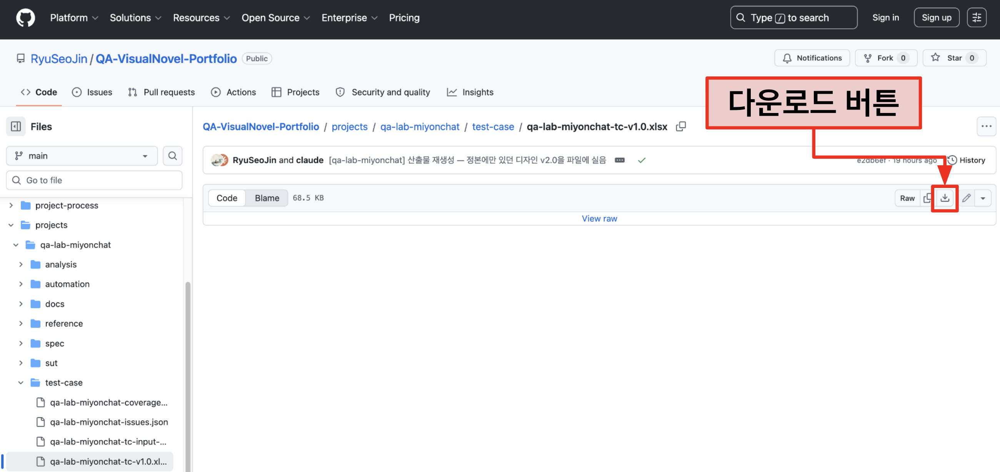

TC 시트 구성
Test Case 목록만 넘기면, 받는 사람은 해당 TC의 규칙을 모르기 때문에 어떻게 수행해야 할 지 모릅니다. 그래서 테스트 케이스를 설계하고 관리하는 데 필요한 장치들을 구성하였습니다.
시트를 직접 다운받아서 보는 법
하단의 「다운받지 않고 시트 구경하기」 탭을 통해 TC를 다운받지 않고 볼수는 있습니다.
하지만 하단의 시트는 html 디자인에 따라 표 형태로 보기 좋게 구성한 방식이라 데이터 컬럼이나 수식 등이 어떻게 들어갔는지는 정확한 판단이 힘듭니다.
Excel에서 열어야 수식, 데이터 컬럼, 시트 디자인 등을 정확하게 볼 수 있어 xlsx 파일을 다운받아 보는 것을 추천드립니다.

다운받지 않고 시트 구경하기
앞서 말했듯이, html로 표현된 시트의 경우 xlsx 파일에서 열어 확인하는 것과 데이터 컬럼이 달라서, 정확한 파일은 xlsx 파일을 다운받아 확인해주시길 바랍니다.
시트는 「명세서」, 「목록」, 「Summary」, 「Test Case」, 「이슈 관리 시트」로 이루어져 있으며, 하단의 chip을 눌러 각각의 html로 구현한 시트를 확인할 수 있습니다.
명세서
해당 xlsx 파일의 모든 시트의 구조나 데이터 컬럼을 나열한 매뉴얼입니다. html 단독으로 설정한 것이 아닌, xlsx의 명세서 시트를 그대로 읽어 보여줍니다.
1. 시트 구성
| 시트 | 역할 |
|---|---|
| 명세서 | 이 시트 — 구조 규칙의 정본 |
| 목록 | 드롭다운 참조 목록의 정본. 값 체계를 색까지 함께 보여 줍니다 |
| Summary | 행 단위 자동 집계(1-Depth 기준). 기준 골격 버전(C4)은 생성 시 자동 기입됩니다 |
| Test Case | TC 작성과 실행 기록. 노란 셀은 실행 단계에서 채워집니다 |
| 이슈 관리 시트 | 결함 기록(내장 운영, JIRA 미사용) — JIRA 이슈 등록·관리 방식을 시트로 표현. Issue No.로 Test Case와 연결합니다. 정본은 별도 파일 test-case/{프로젝트}-issues.json이며 이 시트는 그 파생입니다 |
2. 컬럼 정의 (Test Case)
| 컬럼 | 내용 | 채우는 규칙 |
|---|---|---|
| No | 행 번호 | 자동 수식(ROW() 기준). 직접 입력하지 않습니다 |
| 1~7-Depth | 기능 계층 | 행마다 반복(기대결과 추가 행 포함 — 집계·필터의 전제). 의미 있는 깊이까지만 쓰고 나머지는 빈칸. 병합하지 않습니다 |
| Pre-Condition | 사전조건 | TN 1행에 케이스 진입 조건. 중간 스텝에 앞 스텝이 만들지 못하는 새 상태(시간 경과·외부 변화 등)가 필요하면 그 행에도 적습니다 — 앞 스텝의 결과로 성립한 상태는 제외. 같은 조건이 걸리는 스텝 행 범위는 세로 병합하되 케이스 전체 병합은 금지 |
| TN | 스텝 번호 | 케이스마다 1부터. 새 케이스가 시작되면 1로 복귀. 한 스텝의 기대결과가 여러 행이면(TN 값 무관) Test-Step과 함께 그 범위를 세로 병합합니다 — 반복 기재하면 독립 동작 여러 개로 오독됩니다 |
| Test-Step | 수행 동작 | 「~한다」 체. TN과 같은 범위로 세로 병합 |
| Expected-Result | 기대 결과 | 「~된다」 체. 판정 가능한 문장 — 임계·합격선·시도 횟수는 문장 안에 숫자로. 한 행 = 한 판정이므로 병합하지 않습니다 |
| 실행 주체 | 누가 수행하는가 | 행마다 반복(드롭다운 3종). 자동화 전용 = 사람이 화면만 봐서 판정 불가 / 사람 전용 = 자동화가 판정 기준을 못 세움 / 공통 = 기본값. 반복 횟수는 판정 근거가 아니며 「사람이 1회 봐도 의미가 있는가」로 갈립니다 |
| Priority | 우선순위 | 행마다 반복. High/Medium/Low — 케이스의 속성이지만 Summary가 행 단위로 집계하므로 행마다 값을 둡니다 |
| Total Result | 행 판정 | 수식 열. 병합하지 않고 데이터 한 행씩 세웁니다 — 같은 플랫폼에 단말이 여럿일 때 그 행의 단말 결과를 요약합니다. 직접 입력하지 않습니다 |
| Result | 스텝 실행 결과 | 드롭다운 4종(아래 상태값 정의). 실행 단계에서 채움 — 노란 셀 |
| Issue No. | 관련 이슈 | 해당 TC를 수행하는 과정에서 이슈가 발생하면, 먼저 이슈 관리 시트에 이슈를 등록하고 거기서 부여된 Issue No.를 이 칸에 적습니다. 실행 단계에서 채움 — 노란 셀 |
| Comment | 수행 중 기록 | TC를 수행하다 생긴 문제·관찰을 실행 단계에서 적습니다 — 노란 셀. 설계 시점에는 비어 있습니다 |
| Note | 수행 전 참고사항 | 사람이 읽을 안내만 담습니다 — ①함께 볼 것 ②수행 방법 ③조건 만드는 법. 케이스 메타는 2026-08-03 개정으로 TC ID·검증유형 열이 따로 갖습니다. 스텝 범위 세로 병합 |
| TC ID | 조인 키 | 행마다 반복. 자동화 케이스명·추적 매트릭스·이슈 연결이 참조합니다. 사람의 실행 동선에서 빼려고 Note 우측 참조 블록에 둡니다 |
| 검증유형 | 판정 방식 | 행마다 반복(드롭다운 4종). 반복 횟수는 시트에 적지 않습니다 — 수동 실행자가 자기에게 내려진 지시로 오독하기 때문입니다. 반복은 자동화가 수행하며, 사람은 어떤 유형이든 1회입니다. 확률적·루브릭을 사람이 1회 수행했다면 결과는 Pass가 아니라 관찰 기록이고, 판정은 자동화 반복이나 채점이 담당합니다 |
| 상태 | 케이스가 밟는 게이팅·세션 상태 (2026-08-04 신설) | 행마다 반복. 값 5종은 목록 시트가 정본이고 복수 상태는 쉼표로 적습니다(전환 케이스 — 드롭다운을 걸지 않는 이유). 자동 필터를 「포함」 조건으로 걸어 상태별 TC를 추출하고, 트리의 [상태:] 선언과 맞물려 기능 단위×상태 커버리지를 대조합니다 |
3. 상태값 정의
| 상태 | 정의 | Pass율 분모 |
|---|---|---|
| Pass | 성공 | 포함 |
| Fail | 실패 | 포함 |
| NI | 미구현이거나 스펙에 없어 실행 대상이 아님 (Not Implemented) | 제외 |
| Blocked | 기능은 구현됐으나 확인할 수 없는 상태 — 선행 케이스 Fail·환경 결함·데이터 준비 불가 등. 사유는 실행 과정에서 Comment에 적습니다 | 제외 |
4. Total Result 규칙
| 항목 | 규칙 |
|---|---|
| 우선순위 | Fail > Blocked > NI > Pass — 스텝 중 하나라도 Fail이면 케이스 Fail |
| 수식 원형 | IF(COUNTIF(범위,"Fail")>0,"Fail",IF(COUNTIF(범위,"Blocked")>0,"Blocked",IF(COUNTIF(범위,"NI")>0,"NI",IF(COUNTIF(범위,"Pass")>0,"Pass","")))) — 셀에는 앞에 = 를 붙여 사용합니다. 아무것도 실행되지 않은 케이스는 빈칸입니다 |
| 병합 | 하지 않습니다 — 데이터 한 행씩 세웁니다. 같은 플랫폼에 단말이 여럿일 때 그 행의 단말 결과를 하나로 요약하는 자리입니다 |
5. TC ID 체계
| 항목 | 규칙 |
|---|---|
| 형식 | TC-{영역코드}-{번호 3자리} — 예: TC-ENT-001 |
| 번호 | 영역 안에서만 증가합니다. 다른 영역에 케이스가 추가돼도 기존 ID가 흔들리지 않습니다 |
| 영역코드 | 기능 트리 1-Depth당 하나. 프로젝트별 매핑표는 아래 §5-1이며, 정의가 없는 프로젝트에서는 그 절이 나오지 않습니다 |
| 기재 위치 | Note의 첫 토큰(케이스 메타의 맨 앞). 자동화 케이스명·추적 매트릭스·이슈 연결이 이 ID를 참조합니다. Comment는 설계 시점에 비어 있는 실행 기록 칸이므로 설계 데이터를 두지 않습니다 |
5-1. 영역코드 매핑
| 영역 (기능 트리 1-Depth) | 코드 | 영문 표기 | TC ID 예 |
|---|---|---|---|
| 앱 진입/세션 | ENT | Entry & Session | TC-ENT-001 |
| 계정/게이팅 | GAT | Gating (account & age) | TC-GAT-001 |
| 탐색/발견 | DSC | Discovery | TC-DSC-001 |
| 유저 페르소나 | PRF | Profile (dialogue persona) | TC-PRF-001 |
| 재화 | CUR | Currency | TC-CUR-001 |
| 서사 시스템 | NAR | Narrative | TC-NAR-001 |
| 대화 세션 | CHT | Chat session | TC-CHT-001 |
| 세이브/로드 | SAV | Save & Load | TC-SAV-001 |
| 메모리/컨텍스트 | MEM | Memory & Context | TC-MEM-001 |
| 입력/출력 세이프티 | SAF | Safety (input & output) | TC-SAF-001 |
6. 플랫폼 열 규칙
| 항목 | 규칙 |
|---|---|
| 기본값 | 마스터는 Web / And / iOS 3열 |
| 프로젝트 조정 | TC 설계 시작 시 대상 플랫폼을 사용자에게 재확인하고, Test Case의 Total Result·Result 하위 열과 Summary의 플랫폼 열을 함께 조정합니다 |
7. 입력 규칙
| 항목 | 규칙 |
|---|---|
| 실행 채움 셀(노랑) | 설계 시점에는 비어 있고 실행 단계에서 채워지는 칸 — 환경 블록·Result·Issue No.·Comment. 채우는 주체가 사람이든 자동화든 설계자는 건드리지 않습니다. 설계 데이터는 노란 칸에 두지 않습니다 |
| 설계 셀 | Depth·절차·기대결과는 실행 중 수정하지 않습니다 |
| 틀 고정 | 데이터 첫 행 위. 스크롤해도 2행 제목·헤더·환경 블록이 남으며, 그 구간은 회색(#BFBFBF)과 Total/Result 띠(#F9D7BE)로 데이터와 갈라 둡니다. A열과 1행은 값도 색도 두지 않습니다 |
| 자동 필터 | 헤더 행에 걸어 둡니다. 실행 주체·검증유형·Priority처럼 케이스 단위 값으로 거르면 한 케이스의 행이 통째로 남거나 빠져 스텝 범위 병합이 깨지지 않습니다. Result 같은 행 단위 값으로 거르면 케이스 중간이 잘려 병합이 어색해집니다 |
| 뎁스 채움 색 | 뎁스 열의 값 있는 셀만 텍스트별 고유색으로 채웁니다 — 같은 텍스트는 같은 색, 인접한 다른 텍스트와는 색상환에서 멀어지게 배정. 케이스명 칸과 빈칸은 흰 배경. 규칙 정본은 xlsx-design-guide.md §5 |
| 기준 골격 버전 | Summary C4에 생성 스크립트가 자동 기입합니다 — 형식 {프로젝트}-tree-v{X.Y}. TC 설계 입력(tc-input json)의 값을 그대로 쓰므로 사람이 옮겨 적지 않습니다 |
8. 컬럼 정의 (이슈 관리 시트)
| 컬럼 | 내용 | 채우는 규칙 |
|---|---|---|
| 프로젝트 ID | 프로젝트 식별자 | SUT명 기준. 목록 시트 참조 |
| Issue No. | 발생한 이슈의 식별자 | 발생한 이슈를 등록하며 부여합니다 — {프로젝트}-{생성 번호순} (1 > 2 > 3 > …). TC 수행 중 발생한 이슈라면 이 번호를 Test Case 시트의 Issue No.에 적어 잇습니다 |
| 이슈 상태 | 이슈의 현재 상태 | Open: 열린 상태(재현됨) / In Progress: 담당자가 수정 진행 중 / Resolved: 해결됨 / Reopen: 해결된 이슈가 재현되어 다시 엶 / Closed: 재현되지 않아 닫음 |
| 요약(Summary) | 이슈 제목 | 재현 경로 요약 — 문단 구분은 ">", 마지막은 무엇이 잘못됐는지 수동태로. ex) rules/ 폴더 이동 > A.md 실행 시, 크래시 발생됨 |
| 설명 | 재현 방법 상세 | Pre-condition(사전 조건) / Reproduce Step(재현 스텝) / Actual Result(실제 결과, ~됨) / Expected Result(기대 결과, ~되어야 함) / QA Comment(참고) 순서로 작성 |
| 우선순위 | 이슈 심각도 | High: 크래시·진입 불가 등 치명 / Medium: 진입은 되나 기능 미동작 / Low: 문구·표기 오류 |
| 빈도 | 발생 빈도 | Always: 항상 / Often: 종종(70% 이상) / Sometimes: 가끔(70% 미만) / Once: 1회만 |
| 영향 받는 버전 | 이슈가 재현되는 빌드 | {테스트환경}_{개발목표버전}_{스프린트}_{확인버전} 네 토막. 테스트환경=어디서 확인했는가(PC웹) / 개발목표버전=무엇을 향해 개발 중인가(Ver1.0) / 스프린트=그 목표 버전의 주 목표(Dev, RT1=Release Train 1차) / 확인버전=그 시점의 RC 빌드(RC=Release Candidate). ex) PC웹_Ver1.0_Dev_RC1 · PC웹_Ver1.1_RT1_RC1. 목록 시트 참조(수정 버전과 공용). 확인버전은 검증 대상 빌드가 바뀔 때마다 올리며, SUT를 직접 만드는 프로젝트는 그 값을 SUT 푸터에 표시합니다 |
| 수정 버전 | 이슈가 수정된 버전 | 영향 받는 버전과 같은 목록을 사용합니다 |
| 해결책 | 수정 방향 | Fixed: 코드 수정으로 대응 / Won't Do: 환경·기술 지원 불가로 미대응 / Won't Fix: 수정 필요하나 지금은 안 함 / Duplicate: 동일 건 존재 / Incomplete: 이슈 자체가 잘못됨 / Cannot Reproduce: 재현 불가 / Done: 기획·정책 결정으로 이슈 아님 확정 / Declined(QA Only): QA선에서 이슈로 보지 않음 |
| 환경 | 발생 디바이스 | PC웹 / Android / iOS |
| 레이블 | 발생 영역 | 기능 트리 1-Depth 영역명 — 목록 시트 참조. 트리 개정 시 목록만 갱신하고 기존 행 값은 소급 변경하지 않습니다 |
| 보고자 | 이슈 등록자 | 목록 참조 |
| 담당자 | 이슈 수정 담당자 | 목록 참조 |
| 관측자 | 함께 팔로우할 인원 | 드롭다운 없음 — 쉼표 구분 자유 입력(멀티 선택은 xlsx 표준 기능에 없음) |
| 첨부파일 | 재현 증적 | 재현 영상·이미지의 경로 또는 링크 |
| 스프린트 | QA 진행 단위 | 영향 받는 버전에서 확인버전(RC)을 뺀 앞 세 토막 — {테스트환경}_{개발목표버전}_{스프린트}. 스프린트 하나가 RC1·RC2·RC3에 걸치므로 스프린트는 사이클을, 버전은 그 안의 빌드를 가리킵니다. 발견 단계도 이 칸으로 갈립니다 — ex) PC웹_Ver1.0_Dev(개발 단계 자체 발견) / PC웹_Ver1.0_RT1(QA 사이클 검출). 목록 참조 |
| 이슈 등록일 | 최초 등록일 | YYYY-MM-DD. 이후 변경하지 않습니다 |
| 이슈 최종 수정일자 | 내용 최종 수정일 | YYYY-MM-DD. 요약·설명 등 내용이 바뀔 때 갱신 |
| 이슈 상태 최종 변경일자 | 상태 최종 변경일 | YYYY-MM-DD. 이슈 상태가 바뀔 때 갱신 |
9. 목록 시트 규칙
| 항목 | 규칙 |
|---|---|
| 지위 | 드롭다운 참조의 정본 — 전 시트의 데이터 검증이 이 시트를 참조합니다 |
| 노출 | 숨기지 않습니다 — 값 체계 자체가 전시물입니다. 탭 순서는 읽는 순서를 따라 규칙 다음 자리입니다 |
| 갱신 | 항목 추가는 행 추가로. 명칭 변경은 목록만 교체하고 기존 데이터 행은 소급 변경하지 않습니다(검증은 신규 입력에만 작동) |
| 레이블 동기 | 기능 트리 개정 시 레이블 목록을 함께 갱신합니다(정본 수정 체크리스트 연동) |
목록
특정 데이터 컬럼에서 어떤 값이 드롭다운의 형태로 참조되는 지 정리한 시트입니다.
| 목록 | 값 |
|---|---|
| 프로젝트 | miyonchat |
| 실행 주체 | 자동화 전용 공통 사람 전용 |
| 상태 | 미로그인 본인인증 미진행 성인 인증 미성년 세션 만료 |
| 이슈 상태 | Open In Progress Resolved Reopen Closed |
| 우선순위 | High Medium Low |
| 빈도 | Always Often Sometimes Once |
| 버전(영향/수정 공용) | PC웹_Ver1.0_Dev_RC1 PC웹_Ver1.0_Dev_RC2 PC웹_Ver1.0_Dev_RC3 PC웹_Ver1.0_RT1_RC1 |
| 해결책 | Fixed Won't Do Won't Fix Duplicate Incomplete Cannot Reproduce Done Declined |
| 환경 | PC웹 |
| 레이블 | 앱 진입/세션 계정/게이팅 탐색/발견 유저 페르소나 재화 서사 시스템 대화 세션 세이브/로드 메모리/컨텍스트 입력/출력 세이프티 |
| 보고자 | 정준호 |
| 담당자 | Claude Opus 5 |
| 스프린트 | PC웹_Ver1.0_Dev PC웹_Ver1.0_RT1 |
Summary
1-Depth를 기반으로 어떤 영역에 대한 검증인지 볼 수 있는 요약 영역입니다. Test Case 영역이 채워지면 COUNTIFS 수식에 의해 바로 반영되는 구조입니다.
| 1-Depth (영역) | 케이스 | 스텝 행 | High | Medium | Low | 검증유형 |
|---|---|---|---|---|---|---|
| 웹 진입 | 13 | 20 | 9 | 4 | 0 | 결정적 7 금칙 6 |
| 전역 셸 | 16 | 17 | 7 | 3 | 6 | 결정적 12 금칙 4 |
| 홈 화면 | 27 | 31 | 6 | 16 | 5 | 결정적 24 금칙 3 |
| 캐릭터 페이지 | 16 | 19 | 7 | 3 | 6 | 결정적 14 금칙 2 |
| 대화 프로필 화면 | 10 | 14 | 4 | 3 | 3 | 결정적 8 금칙 2 |
| 대화방 | 44 | 60 | 33 | 8 | 3 | 결정적 27 금칙 14 루브릭 1 확률적 2 |
| 채팅 탭 | 4 | 5 | 1 | 2 | 1 | 결정적 4 |
| MY 탭 | 13 | 16 | 3 | 7 | 3 | 결정적 7 금칙 6 |
| 재화 | 8 | 11 | 3 | 3 | 2 | 결정적 6 금칙 2 |
| 스텁·정적 | 2 | 2 | 0 | 0 | 2 | 결정적 2 |
| 합계 | 153 | 195 | 73 | 49 | 31 |
Test Case
Test Case 시트입니다. 표를 옆으로 밀어 전부 볼 수 있습니다. 실제 xlsx 파일과 데이터를 표현하는 방식은 비슷하나, 셀 단위로 들어가는 값들에 대해서는 정확한 표현이 되지 않았으니, 정확한 확인은 xlsx 파일 다운을 통해 확인해주시길 바랍니다.
| TC ID | 뎁스 경로 | 케이스 | 사전조건 | Test-Step → Expected-Result | 검증유형 | 실행 주체 | 우선순위 | 선행 TC | 대상 | 상태 | Note |
|---|---|---|---|---|---|---|---|---|---|---|---|
TC-ENT-001 | 웹 진입 > 진입 분기 | — | 미로그인 상태 | 1. SUT 주소 진입한다 → 로그인 화면 없이 홈 화면 노출된다 2. 상단 바 확인한다 → 재화 잔액 노출되지 않는다 → 간편 프로필 자리에 로그인 버튼 노출된다 | 결정적 | 공통 | High | - | Web | 미로그인 | 상태는 디버그 콘솔 상태 스위처 「미로그인」으로 만들고 [저장]합니다. 미로그인 열람 범위의 정본은 system-spec §1-1입니다 |
TC-ENT-002 | 웹 진입 > 진입 분기 | — | 성인 계정으로 로그인한 상태 | 1. SUT 주소 재진입한다 → 로그인 화면 없이 홈 화면 노출된다 2. 상단 바 확인한다 → 재화 잔액 노출된다 → 간편 프로필 노출된다 | 결정적 | 공통 | Medium | - | Web | 성인 인증 | 상태 스위처 「로그인 (성인 인증)」으로 만듭니다. 이 케이스는 상태에 따른 화면 분기를 보는 것이고, 새로고침을 견디는지는 TC-ENT-011이 따로 봅니다 |
TC-ENT-003 | 웹 진입 > 진입 분기 | — | 성인 계정으로 로그인한 뒤 세션이 만료된 상태 | 1. SUT 주소 재진입한다 → 만료 안내 모달 노출된다 2. 만료 안내 확인한다 → 미로그인 상태의 홈 화면으로 복귀된다 3. 상단 바 확인한다 → 재화 잔액 노출되지 않는다 → 간편 프로필 자리에 로그인 버튼 노출된다 | 결정적 | 공통 | High | - | Web | 세션 만료 | 만료는 상태 스위처 「세션 만료」로 만듭니다. 모달을 닫으면 미로그인이 되므로 만료 상태에서의 동작 차단은 TC-ENT-004가 대화방에서 봅니다 |
TC-ENT-005 | 웹 진입 > 주소 직접 진입 | — | 성인 계정으로 로그인한 상태 | 1. MY 탭 주소로 새로 진입한다 → 로그인 화면 없이 MY 탭 노출된다 | 결정적 | 공통 | Medium | - | Web | 성인 인증 | 주소 끝에 `?screen=s6`을 붙입니다. 세션 지속으로 계정 스코프가 복원되므로 가드가 통과시킵니다 — 복원이 가드보다 늦으면 로그인 상태인데도 튕겨 나갑니다(§1-3) |
TC-GAT-001 | 웹 진입 > 주소 직접 진입 | 미로그인 상태 | — | 1. 대화방 주소로 직접 진입한다 → 대화방 노출되지 않는다 → 로그인 모달이 아니라 로그인 화면 노출된다 2. 로그인 화면에서 성인 계정 선택한다 → 원래 열려던 대화방으로 복귀된다 | 금칙 | 공통 | High | - | Web | 미로그인 | 주소 끝에 `?screen=s4`를 붙입니다. 뒤에 깔 화면이 없는 경우라 모달이 아니라 로그인 화면이 뜨는 자리입니다(system-spec §1-1) |
TC-GAT-002 | 웹 진입 > 주소 직접 진입 | 미로그인 상태 | — | 1. 채팅 탭 주소로 직접 진입한다 → 채팅 탭 노출되지 않는다 → 로그인 화면 노출된다 | 금칙 | 공통 | High | - | Web | 미로그인 | 주소 끝에 `?screen=s5`를 붙입니다. 로그인 필요 화면마다 케이스를 나눈 것은 하나만 뚫렸을 때 어느 화면인지 TC ID로 읽히게 하기 위해서입니다 |
TC-GAT-003 | 웹 진입 > 주소 직접 진입 | 미로그인 상태 | — | 1. MY 탭 주소로 직접 진입한다 → MY 탭 노출되지 않는다 → 로그인 화면 노출된다 | 금칙 | 공통 | High | - | Web | 미로그인 | 주소 끝에 `?screen=s6`을 붙입니다. 로그인 상태에서 같은 주소가 열리는 것은 TC-ENT-005가 봅니다 |
TC-GAT-004 | 웹 진입 > 주소 직접 진입 | 미로그인 상태 | — | 1. 내 작품 탭 주소로 직접 진입한다 → 내 작품 탭 노출되지 않는다 → 로그인 화면 노출된다 | 금칙 | 공통 | High | - | Web | 미로그인 | 주소 끝에 `?screen=s8`을 붙입니다. 내 작품 탭은 스텁이지만 로그인 필요 화면이라 차단은 걸립니다 |
TC-GAT-005 | 웹 진입 > 주소 직접 진입 | 미로그인 상태 | — | 1. 홈 화면 주소로 직접 진입한다 → 로그인 화면 없이 홈 화면 노출된다 | 결정적 | 공통 | Medium | - | Web | 미로그인 | 주소 끝에 `?screen=s2`를 붙입니다. 차단이 미로그인 열람 화면까지 과하게 걸리지 않는지를 보는 자리라 위 차단 케이스들과 함께 읽습니다 |
TC-GAT-006 | 웹 진입 > 주소 직접 진입 | 미로그인 상태 | — | 1. 커뮤니티 탭 주소로 직접 진입한다 → 로그인 화면 없이 커뮤니티 탭 노출된다 | 결정적 | 공통 | Medium | - | Web | 미로그인 | 주소 끝에 `?screen=s7`을 붙입니다. 커뮤니티 탭은 전시용 정적이지만 미로그인 열람 화면이라 통과합니다 |
TC-GAT-011 | 웹 진입 > 주소 직접 진입 | — | 성인 계정으로 로그인한 뒤 세션이 만료된 상태 | 1. MY 탭 주소로 직접 진입한다 → MY 탭 노출되지 않는다 → 로그인 화면 노출된다 | 금칙 | 공통 | High | - | Web | 세션 만료 | 구현의 판정은 로그인 여부 하나라 만료도 미로그인과 같은 차단을 받습니다. 주소는 `?screen=s6`이며 만료는 상태 스위처로 만듭니다 |
TC-ENT-011 | 웹 진입 > 진입 분기 | — | 성인 계정으로 로그인하고 재화·프로필을 남긴 상태 | 1. 브라우저를 새로고침한다 → 로그인 화면 없이 홈 화면 노출된다 2. 상단 바와 계정 데이터를 확인한다 → 로그인 상태가 유지된다 → 재화·프로필이 복원된다 | 결정적 | 공통 | High | - | Web | 성인 인증 | 계정 스코프만 저장합니다 — 시트 데이터는 테스트 조건이라 저장하지 않고, 화면 보기 상태도 담지 않아 새로고침하면 홈에서 시작합니다(§1-3) |
TC-ENT-012 | 웹 진입 > 진입 분기 | — | 성인 계정으로 로그인하고 가상 시계의 기준일이 옮겨진 상태 | 1. 브라우저를 새로고침한다 → 로그인 상태가 유지된다 2. 기준일을 확인한다 → 기준일이 초기값으로 돌아간다 | 금칙 | 자동화 전용 | High | TC-ENT-011 | Web | 성인 인증 | 조건 만드는 법 — 디버그 콘솔에서 기준일을 옮깁니다. 시트 데이터가 남으면 앞사람이 만든 조건 위에서 다음 테스트가 돌아 무엇을 전제로 통과했는지 알 수 없게 됩니다. 화면에 드러나지 않는 경계라 상태 훅으로 확인합니다 |
TC-DSC-001 | 전역 셸 > 상단 바 | — | 성인 계정으로 로그인해 캐릭터 페이지를 연 상태 | 1. 상단 바 로고 선택한다 → 홈 화면 노출된다 | 결정적 | 공통 | Low | - | Web | 성인 인증 | 홈이 아닌 화면에서 눌렀을 때 복귀하는지를 봅니다. 홈에서 다시 누를 때의 동작은 TC-DSC-002가 맡습니다 |
TC-DSC-002 | 전역 셸 > 상단 바 | — | 성인 계정으로 로그인해 홈 화면을 아래로 스크롤한 상태 | 1. 상단 바 로고 선택한다 → 홈 화면 유지된다 → 목록이 최상단으로 스크롤된다 | 결정적 | 공통 | Low | - | Web | 성인 인증 | 같은 버튼이 화면에 따라 다르게 동작하는 자리라 TC-DSC-001과 나눴습니다 |
TC-DSC-003 | 전역 셸 > 상단 바 | 성인 계정으로 로그인한 상태 | — | 1. 상단 바 검색에 페이지 제목의 일부를 입력하고 실행한다 → 홈 화면에 검색 결과 노출된다 → 입력한 조각을 제목에 포함한 작품이 결과에 노출된다 | 결정적 | 공통 | High | - | Web | 성인 인증 | 기본 데이터에서는 「우산」으로 「비 오는 날의 우산」이 걸립니다. 검색 결과가 별도 화면이 아니라 홈 화면에 표시되는 점을 함께 봅니다 |
TC-DSC-004 | 전역 셸 > 상단 바 | 성인 계정으로 로그인한 상태 | — | 1. 상단 바 검색에 페이지 카테고리명을 입력하고 실행한다 → 그 카테고리를 가진 작품이 결과에 노출된다 | 결정적 | 공통 | High | - | Web | 성인 인증 | 기본 데이터에서는 「로맨스」로 세 작품이 걸립니다. 제목과 카테고리 두 축이 모두 검색 대상이라 TC-DSC-003과 나눴습니다 |
TC-DSC-005 | 전역 셸 > 상단 바 | 성인 계정으로 로그인한 상태 | — | 1. 상단 바 검색에 어느 제목·카테고리와도 겹치지 않는 문자열을 입력하고 실행한다 → 결과 0건 안내 문구 노출된다 | 결정적 | 공통 | Medium | - | Web | 성인 인증 | 빈 결과에서 목록만 비고 안내가 없으면 검색이 안 걸린 것인지 결과가 없는 것인지 구분되지 않습니다 |
TC-DSC-006 | 전역 셸 > 상단 바 | 성인 계정으로 로그인한 상태 | — | 1. 상단 바 알림 선택한다 → 알림 목록 노출된다 → 데이터 시트의 알림 항목이 목록에 노출된다 | 결정적 | 공통 | Low | - | Web | 성인 인증 | 발생 로직은 없고 표시 반영만 검증합니다. 항목은 디버그 콘솔에서 늘리고 비울 수 있습니다 |
TC-DSC-007 | 전역 셸 > 상단 바 | — | 성인 계정으로 로그인하고 알림이 하나도 없는 상태 | 1. 상단 바 알림 선택한다 → 빈 상태 안내 노출된다 | 결정적 | 공통 | Low | TC-DSC-006 | Web | 성인 인증 | 조건 만드는 법 — 디버그 콘솔의 [알림 비우기] 뒤 [저장]. 디버그 콘솔의 [알림 비우기] 뒤 [저장]으로 조건을 만듭니다 |
TC-GAT-007 | 전역 셸 > 상단 바 | — | 미로그인 상태 | 1. 상단 바 알림 선택한다 → 알림 목록 노출되지 않는다 → 로그인 모달 노출된다 | 금칙 | 공통 | High | - | Web | 미로그인 | 알림 열람은 명세 §1-1의 로그인 필요 동작입니다. 상단 바에는 잔액·간편 프로필 대신 로그인 버튼이 놓입니다 |
TC-DSC-008 | 전역 셸 > 하단 내비 | — | 성인 계정으로 로그인해 홈 화면에서 랭킹 칩을 고르고 아래로 스크롤한 상태 | 1. 하단 내비 홈 탭 선택한다 → 활성 필터 칩 유지된다 → 목록이 최상단으로 스크롤된다 | 결정적 | 공통 | Low | - | Web | 성인 인증 | 칩이 기본값으로 돌아가면 「돌아왔을 때 그대로인가」를 확인할 수 없습니다 |
TC-GAT-008 | 전역 셸 > 하단 내비 | 미로그인 상태 | — | 1. 하단 내비 채팅 탭 선택한다 → 채팅 탭 열리지 않는다 → 로그인 모달 노출된다 | 금칙 | 공통 | High | - | Web | 미로그인 | 셸 안에서 막히는 경우라 로그인 화면이 아니라 모달이 뜨고 뒤 화면은 그대로 남습니다(system-spec §1-1) |
TC-GAT-009 | 전역 셸 > 하단 내비 | 미로그인 상태 | — | 1. 하단 내비 MY 탭 선택한다 → MY 탭 열리지 않는다 → 로그인 모달 노출된다 | 금칙 | 공통 | High | - | Web | 미로그인 | 탭마다 케이스를 나눈 것은 하나만 뚫렸을 때 어느 탭인지 TC ID로 읽히게 하기 위해서입니다 |
TC-GAT-010 | 전역 셸 > 하단 내비 | 미로그인 상태 | — | 1. 하단 내비 내 작품 탭 선택한다 → 내 작품 탭 열리지 않는다 → 로그인 모달 노출된다 | 금칙 | 공통 | High | - | Web | 미로그인 | 내 작품 탭은 스텁이지만 로그인 필요 화면이라 차단은 걸립니다 |
TC-DSC-009 | 전역 셸 > 하단 내비 | 미로그인 상태 | — | 1. 하단 내비 커뮤니티 탭 선택한다 → 커뮤니티 탭 노출된다 → 로그인 모달 노출되지 않는다 | 결정적 | 공통 | Medium | - | Web | 미로그인 | 차단이 공개 탭까지 과하게 걸리지 않는지를 보는 자리라 위 차단 케이스들과 함께 읽습니다 |
TC-ENT-006 | 전역 셸 > 로그인 모달 | 미로그인 상태에서 채팅 탭이 막혀 로그인 모달이 뜬 상태 | — | 1. 로그인 모달에서 성인 계정 선택한다 → 로그인 모달 닫힌다 → 막혔던 채팅 탭 열린다 | 결정적 | 공통 | High | TC-GAT-008 | Web | 미로그인 성인 인증 | 막을 때는 아무것도 수행하지 않고 풀리면 그때 수행한다는 규칙의 짝입니다(system-spec §1-1) |
TC-ENT-007 | 전역 셸 > 로그인 모달 | 미로그인 상태에서 채팅 탭이 막혀 로그인 모달이 뜬 상태 | — | 1. 로그인 모달 닫기 선택한다 → 로그인 모달 닫힌다 → 모달이 뜨기 전 보던 화면 유지된다 → 채팅 탭 열리지 않는다 | 결정적 | 공통 | Medium | TC-GAT-008 | Web | 미로그인 | 모달은 뒤 화면을 살려 두므로 닫으면 제자리입니다. 막힌 동작이 몰래 수행되지 않았는지도 함께 봅니다 |
TC-DSC-010 | 홈 화면 > 필터 칩 | — | 성인 계정으로 로그인한 상태 | 1. 홈 화면 칩 줄 확인한다 → 추천·랭킹·신작 칩 노출된다 → 카테고리 칩 세 개(로맨스·판타지·일상) 노출된다 → 추천 칩이 활성 상태로 노출된다 | 결정적 | 공통 | Medium | - | Web | 성인 인증 | 칩 구성의 정본은 system-spec §8-6입니다. 카테고리는 3종 고정이며 작품 카테고리 배열의 첫 항목이 대표입니다 |
TC-DSC-011 | 홈 화면 > 추천 탭 | — | 성인 계정으로 로그인하고 캐릭터가 8개 이상 있는 상태 | 1. 추천 칩 선택한다 → 추천 탭 노출된다 2. 추천 캐러셀 확인한다 → 캐러셀 카드가 7개까지만 노출된다 → 월간 이용수 순으로 정렬된다 | 결정적 | 공통 | Medium | - | Web | 성인 인증 | 조건 만드는 법 — 디버그 콘솔의 캐릭터 생성 버튼으로 늘립니다. 캐릭터는 디버그 콘솔의 캐릭터 생성 버튼으로 늘립니다. 동률은 §8-4 체인(이용수→좋아요→ID)이 가릅니다 |
TC-DSC-012 | 홈 화면 > 추천 탭 | — | 성인 계정으로 로그인하고 대화 이력이 없는 상태 | 1. 추천 탭 확인한다 → 최근 대화한 캐릭터 섹션 노출되지 않는다 | 결정적 | 공통 | Medium | - | Web | 성인 인증 | 이력이 생긴 뒤의 노출은 대화방 영역에서 봅니다. 조건부 노출이라 빈 섹션이 남으면 결함입니다 |
TC-DSC-013 | 홈 화면 > 추천 탭 | — | 성인 계정으로 로그인한 상태 | 1. 떠오르는 신작 섹션 확인한다 → 생성 60일 이내이면서 월간 이용수 1건 이상인 작품만 노출된다 → 주간 이용수 상위 5개까지 노출된다 | 결정적 | 공통 | Medium | - | Web | 성인 인증 | 두 창이 다른 일을 합니다 — 월간이 모수를 거르고 주간이 순서를 만듭니다(§8-5). 출시일·이용수는 디버그 콘솔 표에서 옮겨 경계를 만듭니다 |
TC-DSC-014 | 홈 화면 > 추천 탭 | — | 성인 계정으로 로그인하고 한 작품의 출시일이 기준일 61일 전인 상태 | 1. 떠오르는 신작 섹션 확인한다 → 그 작품이 섹션에서 빠진다 | 결정적 | 공통 | Medium | TC-DSC-013 | Web | 성인 인증 | 조건 만드는 법 — 디버그 콘솔에서 출시일 칸을 고치고 저장한 뒤 현재 화면 새로고침으로 반영합니다. 60일이 경계라 61일은 밖입니다. 출시일 칸을 고치고 저장한 뒤 현재 화면 새로고침으로 반영합니다 |
TC-DSC-015 | 홈 화면 > 추천 탭 | — | 성인 계정으로 로그인한 상태 | 1. 지금 뜨거운 섹션 확인한다 → 주간 이용수 1건 이상인 작품만 노출된다 → 주간 이용수 상위 5개까지 노출된다 | 결정적 | 공통 | Medium | - | Web | 성인 인증 | 떠오르는 신작과 달리 생성일 조건이 없습니다. 이용수 0건이 상위에 오르면 섹션의 뜻과 어긋나 선정식을 화면으로 검증할 수 없게 됩니다 |
TC-DSC-016 | 홈 화면 > 추천 탭 | — | 성인 계정으로 로그인하고 모든 작품의 이용수가 0인 상태 | 1. 떠오르는 신작·지금 뜨거운 섹션 확인한다 → 섹션 자리에 0건 안내 노출된다 | 결정적 | 공통 | Low | TC-DSC-013 | Web | 성인 인증 | 조건 만드는 법 — 디버그 콘솔에서 이용수 일간·주간·월간을 전부 0으로 둡니다. 이용수 일간·주간·월간을 전부 0으로 두면 두 섹션의 모수가 비웁니다 |
TC-DSC-017 | 홈 화면 > 랭킹 탭 | — | 성인 계정으로 로그인한 상태 | 1. 랭킹 칩 선택한다 → 일간 기간이 선택된 상태로 노출된다 → 이용수 순 기준이 선택된 상태로 노출된다 | 결정적 | 공통 | Medium | - | Web | 성인 인증 | 기간 버튼 배열(일→주→월)의 첫 값과 같습니다(§8-3) |
TC-DSC-018 | 홈 화면 > 랭킹 탭 | — | 성인 계정으로 로그인해 랭킹 탭을 연 상태 | 1. 주간 선택한다 → 집계 구간이 최근 7일로 바뀐다 2. 월간 선택한다 → 집계 구간이 최근 30일로 바뀐다 | 결정적 | 공통 | High | TC-DSC-017 | Web | 성인 인증 | 기간은 이용수 기준에만 걸립니다 — 좋아요·리뷰는 누적값이라 기간을 바꿔도 순위가 그대로여야 합니다 |
TC-DSC-019 | 홈 화면 > 랭킹 탭 | — | 성인 계정으로 로그인하고 같은 유저·같은 작품·같은 날짜의 이벤트를 여럿 둔 상태 | 1. 일간 랭킹의 이용수 확인한다 → 중복 이벤트가 1건으로 집계된다 | 결정적 | 공통 | High | - | Web | 성인 인증 | 이벤트는 유저×작품×날짜 조합으로 셉니다(§8-2). 디버그 콘솔의 원본 편집에서 이벤트를 직접 넣습니다 |
TC-DSC-020 | 홈 화면 > 랭킹 탭 | — | 성인 계정으로 로그인하고 기준일보다 나중 날짜의 이벤트를 둔 상태 | 1. 랭킹의 이용수 확인한다 → 미래 이벤트가 집계에서 제외된다 | 결정적 | 공통 | Medium | - | Web | 성인 인증 | 주입 데이터 방어입니다(§8-1). 기준일은 디버그 콘솔의 기준일 칸이 정합니다 |
TC-DSC-021 | 홈 화면 > 랭킹 탭 | — | 성인 계정으로 로그인하고 선택한 기간의 이용수가 0인 작품이 있는 상태 | 1. 이용수 순 랭킹 확인한다 → 그 작품이 순위에서 제외된다 | 결정적 | 공통 | Medium | - | Web | 성인 인증 | 0건 제외는 이용수 순위에만 걸립니다 — 좋아요·리뷰 순에서는 빠지지 않습니다 |
TC-DSC-022 | 홈 화면 > 랭킹 탭 | — | 성인 계정으로 로그인해 랭킹 탭을 연 상태 | 1. 좋아요 순 선택한다 → 좋아요 수 내림차순으로 정렬된다 2. 리뷰 많은 순 선택한다 → 리뷰 수 내림차순으로 정렬된다 | 결정적 | 공통 | Medium | TC-DSC-017 | Web | 성인 인증 | 동률은 §8-4 체인이 가릅니다. 정렬 근거는 디버그 콘솔의 카드 지표 표시를 켜면 카드에서 읽힙니다 |
TC-DSC-023 | 홈 화면 > 랭킹 탭 | — | 성인 계정으로 로그인하고 리뷰 수가 50 미만인 작품이 있는 상태 | 1. 리뷰 점수 순 선택한다 → 리뷰 50개 미만인 작품이 순위에서 제외된다 | 결정적 | 공통 | Medium | TC-DSC-017 | Web | 성인 인증 | 임계 50은 §8-3이 정본입니다. 경계(49·50·51)는 디버그 콘솔 표의 리뷰 수 칸으로 만듭니다 |
TC-DSC-024 | 홈 화면 > 랭킹 탭 | — | 성인 계정으로 로그인해 랭킹 탭을 연 상태 | 1. 랭킹 도움말 선택한다 → 최소 표본 기준을 포함한 규칙 요약 노출된다 | 결정적 | 공통 | Low | - | Web | 성인 인증 | 규칙성 화면에 두는 도움말입니다 — 화면 안에서 기준을 읽을 수 있어야 정렬 결과를 판단할 수 있습니다 |
TC-DSC-025 | 홈 화면 > 신작 탭 | — | 성인 계정으로 로그인한 상태 | 1. 신작 칩 선택한다 → 출시일 최신순으로 정렬된다 | 결정적 | 공통 | Medium | - | Web | 성인 인증 | 떠오르는 신작과 달리 이용수 조건이 없습니다 — 전량을 출시일로만 줄 세웁니다 |
TC-DSC-026 | 홈 화면 > 카테고리 탭 | — | 성인 계정으로 로그인한 상태 | 1. 로맨스 칩 선택한다 → 로맨스 카테고리를 가진 작품만 노출된다 | 결정적 | 공통 | Medium | - | Web | 성인 인증 | 카테고리는 작품의 속성이고 한 작품이 여럿을 가집니다(§8-6). 대표는 배열의 첫 항목입니다 |
TC-DSC-027 | 홈 화면 > 카테고리 탭 | — | 성인 계정으로 로그인해 카테고리 칩 화면을 연 상태 | 1. 카테고리 인기 신작 섹션 확인한다 → 그 카테고리를 가진 작품만 모수로 잡힌다 → 떠오르는 신작과 같은 선정식이 적용된다 | 결정적 | 공통 | Medium | TC-DSC-026 | Web | 성인 인증 | §8-5의 떠오르는 신작과 식이 같고 모수만 카테고리로 좁힌 것입니다 |
TC-DSC-028 | 홈 화면 > 카테고리 탭 | 성인 계정으로 로그인해 로맨스 칩 화면을 연 상태 | — | 1. 후회 칩 선택한다 → 로맨스와 후회를 모두 가진 작품만 노출된다 | 결정적 | 공통 | Medium | TC-DSC-026 | Web | 성인 인증 | OR가 아니라 AND입니다. 로맨스의 함께 보는 카테고리는 집착·소꿉친구·계약연애·후회입니다(§8-6) |
TC-DSC-029 | 홈 화면 > 카테고리 탭 | 성인 계정으로 로그인해 로맨스 칩 화면을 연 상태 | — | 1. 겹치는 작품이 없는 함께 보는 카테고리 칩 선택한다 → 결과 0건 안내 노출된다 | 결정적 | 공통 | Low | TC-DSC-028 | Web | 성인 인증 | 목록만 비고 안내가 없으면 필터가 안 걸린 것인지 결과가 없는 것인지 구분되지 않습니다 |
TC-DSC-030 | 홈 화면 > 카테고리 탭 | — | 성인 계정으로 로그인해 카테고리 칩 화면을 연 상태 | 1. 최신순 선택한다 → 출시일 최신순으로 정렬된다 2. 대화순 선택한다 → 누적 이용수 순으로 정렬된다 | 결정적 | 공통 | Medium | TC-DSC-026 | Web | 성인 인증 | 대화순은 기간 창이 없는 누적 이용수입니다 — 랭킹의 기간 필터와 다른 축입니다 |
TC-DSC-031 | 홈 화면 > 캐릭터 카드 | — | 성인 계정으로 로그인한 상태 | 1. 홈 화면의 캐릭터 카드 확인한다 → 이미지 자리·페이지 제목·보조 설명·제작자 네 줄로 구성된다 → 좋아요·리뷰·이용수 지표가 카드에 노출되지 않는다 | 결정적 | 공통 | Low | - | Web | 성인 인증 | 지표를 카드에 두지 않는 것이 스펙입니다(§8-4-1) — 서비스 화면을 그대로 두고 정렬 근거는 테스트 설비로만 켭니다 |
TC-DSC-032 | 홈 화면 > 캐릭터 카드 | — | 성인 계정으로 로그인하고 카드 지표 표시가 켜진 상태 | 1. 홈 화면의 캐릭터 카드 확인한다 → 카드에 지표 줄이 붙는다 | 결정적 | 공통 | Low | TC-DSC-031 | Web | 성인 인증 | 조건 만드는 법 — 디버그 콘솔에서 카드 지표 표시를 켭니다. 정렬 근거를 눈으로 확인할 때만 켭니다. 랭킹에서는 그 자리에 선택한 정렬 기준값이 나옵니다 |
TC-GAT-012 | 홈 화면 > 언세이프 게이트 | — | 미로그인 상태 | 1. 홈 화면의 언세이프 작품 카드 확인한다 → 카드가 블러 표식과 함께 노출된다 → 상세 내용 노출되지 않는다 | 금칙 | 공통 | High | - | Web | 미로그인 | 기본 데이터의 언세이프는 카일(c4)입니다. 미로그인은 로그인·본인인증으로 해제할 수 있어 미성년과 대비됩니다 |
TC-GAT-013 | 홈 화면 > 언세이프 게이트 | — | 성인 인증을 하지 않은 계정으로 로그인한 상태 | 1. 홈 화면의 언세이프 작품 카드 확인한다 → 카드가 블러 표식과 함께 노출된다 → 본인인증을 하면 볼 수 있다는 안내 노출된다 | 금칙 | 공통 | High | - | Web | 본인인증 미진행 | 인증을 하지 않아 나이를 모르는 상태입니다. 상태 스위처의 본인인증 미진행으로 만듭니다 |
TC-GAT-014 | 홈 화면 > 언세이프 게이트 | — | 미성년 계정으로 로그인한 상태 | 1. 홈 화면의 언세이프 작품 카드 확인한다 → 카드가 블러 표식과 함께 노출된다 → 해제 수단이 없다는 안내 노출된다 | 금칙 | 공통 | High | - | Web | 미성년 | 미성년은 인증으로도 풀리지 않습니다 — 본인인증 미진행과 화면은 같아 보이나 해제 가능성이 정반대이며, 이 대비가 게이팅 검증의 축입니다 |
TC-GAT-015 | 홈 화면 > 언세이프 게이트 | — | 성인 계정으로 로그인한 상태 | 1. 홈 화면의 언세이프 작품 카드 확인한다 → 카드가 블러 없이 노출된다 | 결정적 | 공통 | High | - | Web | 성인 인증 | 게이트가 과하게 걸리는 것도 결함이라 통과를 따로 세웁니다(positive 케이스). 차단 셋과 짝으로 읽습니다 |
TC-DSC-033 | 캐릭터 페이지 > 작품·캐릭터 층 | — | 성인 계정으로 로그인해 홈 화면을 연 상태 | 1. 캐릭터 카드 선택한다 → 캐릭터 페이지 노출된다 2. 페이지 구성 확인한다 → 작품 층(제목·보조 설명·카테고리 칩·스토리 블록) 노출된다 → 캐릭터 층(이름·한 줄 설명·상세 설명·시작 상황·첫 메시지)이 구분선으로 나뉘어 노출된다 | 결정적 | 공통 | High | - | Web | 성인 인증 | 카드에서 페이지로 넘어가는 진입 검증은 출발 화면인 홈이 아니라 여기 소속입니다 — 트리거가 카드 선택이라 홈 소속으로 볼 여지가 있으나, 검증 대상이 페이지 구성이라 페이지에 둡니다 |
TC-DSC-034 | 캐릭터 페이지 > 작품·캐릭터 층 | 성인 계정으로 로그인해 캐릭터 페이지를 연 상태 | — | 1. 제작자 영역 확인한다 → 제작자명과 팔로우 수가 시트 값으로 노출된다 → 팔로우 동작이 제공되지 않는다 | 결정적 | 공통 | Low | TC-DSC-033 | Web | 성인 인증 | 소셜은 제외 영역이라 표시만 합니다. 값은 데이터 시트가 정합니다 |
TC-DSC-035 | 캐릭터 페이지 > 작품·캐릭터 층 | 성인 계정으로 로그인해 캐릭터 페이지를 연 상태 | — | 1. 현황 영역 확인한다 → 이용수·좋아요 수·팔로우 수가 시트·계정 상태와 일치한다 | 결정적 | 공통 | Medium | TC-DSC-033 | Web | 성인 인증 | 좋아요 수는 시트 기본값에 계정의 토글이 더해진 값입니다(§8-7) — 내가 누른 좋아요가 반영돼야 합니다 |
TC-DSC-036 | 캐릭터 페이지 > 작품·캐릭터 층 | 성인 계정으로 로그인해 캐릭터 페이지를 연 상태 | — | 1. 출시일 영역 확인한다 → 출시일과 최종 업데이트일이 노출된다 → 버전이 v 접두와 함께 노출된다 | 결정적 | 공통 | Low | TC-DSC-033 | Web | 성인 인증 | 저장은 숫자로 하고 표시할 때 v를 붙입니다(§8-8). 값은 디버그 콘솔 표의 버전 칸에서 옮깁니다 |
TC-DSC-037 | 캐릭터 페이지 > 작품·캐릭터 층 | — | 성인 계정으로 로그인하고 한 작품의 버전에 v2.5a가 입력된 상태 | 1. 저장하고 캐릭터 페이지 확인한다 → 입력에서 숫자와 점만 남는다 → 화면에 v2.5로 노출된다 | 결정적 | 공통 | Low | TC-DSC-036 | Web | 성인 인증 | 조건 만드는 법 — 디버그 콘솔의 버전 칸에 v2.5a를 입력합니다. v를 직접 적어도 접두가 겹치지 않는 것이 기대값입니다. 입력 단계에서 걸러집니다 |
TC-DSC-038 | 캐릭터 페이지 > 그 외 작품 추천 | — | 성인 계정으로 로그인해 캐릭터 페이지를 연 상태 | 1. 그 외 작품 섹션 확인한다 → 페이지 카테고리를 하나라도 공유하는 작품만 노출된다 → 좋아요 10개 이상인 작품만 노출된다 → 최대 5개까지 노출된다 | 결정적 | 공통 | Low | TC-DSC-033 | Web | 성인 인증 | 임계 10·상한 5가 확정값이며 디버그 콘솔에서 옮긴 값은 경계를 만드는 수단이지 기대값의 근거가 아닙니다(§8-8). 자기 자신은 후보에서 빠집니다 |
TC-DSC-039 | 캐릭터 페이지 > 그 외 작품 추천 | — | 성인 계정으로 로그인하고 추천 후보가 하나도 없는 상태 | 1. 그 외 작품 섹션 확인한다 → 관련 추천 작품이 없다는 안내 노출된다 → 그 외 작품 목록 노출되지 않는다 | 결정적 | 공통 | Low | TC-DSC-038 | Web | 성인 인증 | 조건 만드는 법 — 디버그 콘솔에서 좋아요 임계를 후보가 없을 만큼 올립니다. 섹션을 감추면 안 뜬 것과 없는 것이 구분되지 않아 안내를 남깁니다. 기본 데이터에서 자주 나오는 화면입니다 |
TC-DSC-040 | 캐릭터 페이지 > 작품·캐릭터 층 | — | 성인 계정으로 로그인해 캐릭터 페이지를 연 상태 | 1. 시작 상황 영역 확인한다 → 제작자가 정한 시작 상황이 노출된다 → 유저가 고르는 수단이 제공되지 않는다 | 결정적 | 공통 | High | TC-DSC-033 | Web | 성인 인증 | 캐릭터당 하나이며 그 상황으로 대화가 시작됩니다. 그 id가 mock 세트의 시나리오 좌표입니다 |
TC-DSC-041 | 캐릭터 페이지 > 좋아요·스크랩 | 성인 계정으로 로그인해 캐릭터 페이지를 연 상태 | — | 1. 좋아요 선택한다 → 좋아요 상태가 켜진다 → 현황의 좋아요 수가 1 증가한다 2. 페이지를 다시 연다 → 좋아요 상태가 유지된다 | 결정적 | 공통 | Medium | TC-DSC-033 | Web | 성인 인증 | MY 활동 목록과 랭킹 좋아요 정렬에도 반영됩니다 — 그쪽 확인은 MY 탭·홈 화면 영역이 맡습니다 |
TC-DSC-042 | 캐릭터 페이지 > 좋아요·스크랩 | 성인 계정으로 로그인해 캐릭터 페이지를 연 상태 | — | 1. 스크랩 선택한다 → 스크랩 상태가 켜진다 2. 페이지를 다시 연다 → 스크랩 상태가 유지된다 | 결정적 | 공통 | Medium | TC-DSC-033 | Web | 성인 인증 | 스크랩은 좋아요와 달리 정렬에 쓰이지 않고 MY 활동 목록에만 반영됩니다 |
TC-DSC-043 | 캐릭터 페이지 > 하단 버튼 | — | 성인 계정으로 로그인하고 그 캐릭터와의 대화방이 없는 상태 | 1. 하단 고정 버튼 확인한다 → 프로필 선택과 대화 시작 버튼이 노출된다 → 대화방 목록 노출되지 않는다 | 결정적 | 공통 | High | TC-DSC-033 | Web | 성인 인증 | 방 유무로 구성이 갈리는 자리라 있는 경우와 나눴습니다 |
TC-DSC-044 | 캐릭터 페이지 > 하단 버튼 | 성인 계정으로 로그인하고 그 캐릭터와의 대화방이 있는 상태 | — | 1. 하단 고정 버튼 확인한다 → 대화방 목록이 노출된다 → 새 대화 시작 버튼이 노출된다 | 결정적 | 공통 | High | TC-DSC-043 | Web | 성인 인증 | 방은 대화방 영역의 케이스로 만들어 둡니다. 방마다 프로필·진행 상태가 함께 표시됩니다 |
TC-DSC-045 | 캐릭터 페이지 > 하단 버튼 | 성인 계정으로 로그인하고 그 캐릭터와의 대화방이 있는 상태 | — | 1. 대화방 목록에서 방 선택한다 → 그 방으로 재진입된다 → 저장된 대화가 그대로 노출된다 | 결정적 | 공통 | High | TC-DSC-044 | Web | 성인 인증 | 대화방 1-Depth는 진입한 상태를 사전조건으로 시작하므로 진입 경로 검증은 여기 남습니다 |
TC-DSC-046 | 캐릭터 페이지 > 하단 버튼 | — | 성인 계정으로 로그인하고 그 캐릭터의 대화방이 한도까지 찬 상태 | 1. 새 대화 시작 선택한다 → 새 방이 만들어지지 않는다 → 삭제 여부를 묻는 안내 노출된다 | 금칙 | 공통 | High | TC-DSC-044 | Web | 성인 인증 | 한도 값은 system-spec §6이 정본이며 세이브 로드의 새 방 갈래도 같은 한도를 받습니다 |
TC-GAT-016 | 캐릭터 페이지 > 언세이프 게이트 | — | 미성년 계정으로 로그인한 상태 | 1. 언세이프 작품의 캐릭터 페이지를 연다 → 소개·시작 상황·첫 메시지가 숨겨진다 → 열람 제한 안내 노출된다 | 금칙 | 공통 | High | - | Web | 미성년 | 홈의 카드 블러와 층이 다릅니다 — 여기는 페이지 안의 상세 숨김이라 지점이 갈립니다 |
TC-PRF-001 | 대화 프로필 화면 > 프로필 폼 | 성인 계정으로 로그인해 대화 프로필 화면을 연 상태 | — | 1. 이름에 12자를 입력한다 → 12자가 그대로 남는다 → 카운터가 12/12로 노출된다 2. 이름에 13자를 입력한다 → 12자까지만 남는다 | 결정적 | 공통 | High | - | Web | 성인 인증 | 어느 경로로 값이 들어와도 상한을 넘는 값이 남지 않는 것이 기대값입니다 — 붙여넣기와 자동화 주입도 같은 결과여야 합니다(§2) |
TC-PRF-002 | 대화 프로필 화면 > 프로필 폼 | 성인 계정으로 로그인해 대화 프로필 화면을 연 상태 | — | 1. 자유 설명에 1,001자를 입력한다 → 1,000자까지만 남는다 | 결정적 | 공통 | Medium | TC-PRF-001 | Web | 성인 인증 | 값 주입으로 넣어야 실효가 있습니다 — 손으로 치면 입력 단계에서 막혀 저장 경로의 자르기가 확인되지 않습니다 |
TC-PRF-003 | 대화 프로필 화면 > 프로필 폼 | 성인 계정으로 로그인해 대화 프로필 화면을 연 상태 | — | 1. 이름을 비운다 → 저장 버튼이 비활성된다 2. 이름에 공백만 입력한다 → 저장 버튼이 비활성 상태로 유지된다 | 결정적 | 공통 | Medium | - | Web | 성인 인증 | 공백만 넣어도 비활성이어야 합니다 — 이름이 필수값인 유일한 항목입니다 |
TC-PRF-004 | 대화 프로필 화면 > 프로필 폼 | 성인 계정으로 로그인해 대화 프로필 화면을 연 상태 | — | 1. Label에 31자를 입력한다 → 30자까지만 남는다 | 결정적 | 공통 | Low | - | Web | 성인 인증 | Label은 프로필의 용도를 적는 짧은 표기입니다(연애 모드 등). 목록에서 프로필을 가리는 데 쓰입니다 |
TC-PRF-005 | 대화 프로필 화면 > 프로필 폼 | 성인 계정으로 로그인해 대화 프로필 화면을 연 상태 | — | 1. 랜덤 완성 선택한다 → 폼이 채워진다 → 채워진 값이 상한을 넘지 않는다 → 저장 버튼이 활성된다 | 결정적 | 공통 | Low | TC-PRF-001 | Web | 성인 인증 | 랜덤으로 채운 값도 상한·필수값 규칙을 그대로 받는 것이 기대값입니다 |
TC-PRF-006 | 대화 프로필 화면 > 복수 프로필 | — | 성인 계정으로 로그인하고 프로필을 한도까지 만든 상태 | 1. 프로필 추가를 시도한다 → 추가가 막힌다 → 한도 안내 노출된다 | 결정적 | 공통 | Medium | TC-PRF-001 | Web | 성인 인증 | 한도 5는 §2가 정본입니다. 실측값 100은 경계를 만드는 비용이 커 자사 값으로 낮춘 것입니다 |
TC-PRF-007 | 대화 프로필 화면 > 복수 프로필 | — | 성인 계정으로 로그인하고 프로필을 둘 이상 만든 상태 | 1. 프로필 하나를 골라 대화를 시작한다 → 대화방으로 진입된다 2. 대화방의 프로필 표시를 확인한다 → 고른 프로필이 그 방에 고정된다 | 결정적 | 공통 | High | TC-PRF-006 | Web | 성인 인증 | 방을 만든 뒤에는 프로필이 바뀌지 않습니다 — 방마다 다른 프로필을 쓰는 것이 이 구조의 목적입니다 |
TC-PRF-008 | 대화 프로필 화면 > 복수 프로필 | — | 성인 계정으로 로그인하고 서로 다른 프로필로 만든 대화방이 둘 있는 상태 | 1. 두 방의 응답에서 이름·호칭을 확인한다 → 각 방이 자기 프로필의 이름·호칭으로 응답한다 → 다른 방의 값이 섞이지 않는다 | 금칙 | 공통 | High | TC-PRF-007 | Web | 성인 인증 | 프로필을 지워도 그 프로필로 시작한 방의 대화는 저장된 값으로 남습니다 — 방에 사본이 고정되기 때문입니다 |
TC-PRF-009 | 대화 프로필 화면 > 프로필 폼 | — | 성인 계정으로 로그인하고 프로필이 하나도 없는 상태 | 1. 대화 프로필 화면을 연다 → 빈 상태 안내 노출된다 | 결정적 | 공통 | Low | - | Web | 성인 인증 | 첫 진입 화면이라 목록만 비어 있으면 폼이 안 뜬 것인지 프로필이 없는 것인지 구분되지 않습니다 |
TC-SAF-001 | 대화 프로필 화면 > 프로필 폼 | — | 성인 계정으로 로그인해 대화 프로필 화면을 연 상태 | 1. 자유 설명에 주입 토큰을 넣어 저장한다 → 저장 시 차단 안내 노출된다 2. 그 프로필로 대화를 시작해 응답을 확인한다 → 지시문이 응답에 반영되지 않는다 | 금칙 | 공통 | High | TC-PRF-001 | Web | 성인 인증 | 게이팅 계층의 차단이며 모델 자체의 주입 내성 검증이 아닙니다. 코퍼스는 추상 토큰만 씁니다 |
TC-CHT-001 | 대화방 > 송수신 | 성인 계정으로 로그인해 대화방에 있는 상태 | — | 1. 자유 입력에 문장을 넣고 전송한다 → 유저 메시지가 목록에 붙는다 → 표시 중 표식이 노출된다 2. 응답 표시가 끝나기를 기다린다 → AI 응답이 목록에 붙는다 → 표시 중 표식이 사라진다 | 결정적 | 공통 | High | - | Web | 성인 인증 | 대기는 고정 시간이 아니라 표시 중 표식이 사라지는 것으로 판정합니다 — 브라우저가 백그라운드 타이머를 늦춰 sleep 기반 대기는 환경에 따라 깨집니다 |
TC-CHT-002 | 대화방 > 송수신 | 성인 계정으로 로그인해 대화방에 있는 상태 | — | 1. 입력창에 501자를 넣는다 → 500자까지만 남는다 → 글자수 카운터가 500/500으로 노출된다 | 결정적 | 공통 | Medium | TC-CHT-001 | Web | 성인 인증 | 값 주입으로 넣어야 저장 경로의 자르기까지 확인됩니다. 편집칸도 같은 상한을 받습니다 |
TC-ENT-004 | 대화방 > 송수신 | — | 성인 계정으로 로그인해 대화방에 진입한 뒤 세션이 만료된 상태 | 1. 만료 안내를 닫지 않은 채 전송을 시도한다 → 전송이 수행되지 않는다 → 재화가 소비되지 않는다 | 금칙 | 공통 | High | TC-ENT-003 | Web | 세션 만료 | 명세 §1-1의 만료 행이 차단한다고 적은 것은 전송·저장·수령입니다. 하단 내비는 만료 안내가 딤으로 덮고 있어 누를 수 없으므로 지점이 되지 못합니다 |
TC-NAR-001 | 대화방 > 고정 선택지 | — | 성인 계정으로 로그인해 대화방에 있는 상태 | 1. 호감형 선택지를 고른다 → 선택지 내용이 유저 메시지로 붙는다 2. 현재 상태 패널의 호감도를 확인한다 → 호감도가 2 증가한다 | 결정적 | 공통 | High | TC-CHT-001 | Web | 성인 인증 | 가중치는 호감형 +2 · 중립 +1 · 비호감 −1입니다(§4-1). 자유 입력과 병행하는 진행 수단입니다 |
TC-NAR-002 | 대화방 > 서사 | — | 성인 계정으로 로그인하고 호감도가 0인 대화방에 진입한 상태 | 1. 비호감 선택지를 고른다 → 호감도가 0으로 유지된다 → 음수로 내려가지 않는다 | 결정적 | 공통 | High | TC-NAR-001 | Web | 성인 인증 | 하한 0은 되돌림의 다시 세기 방식을 정한 근거이기도 합니다(§5-1) — 뺄셈으로 되돌리면 없던 점수가 생깁니다 |
TC-NAR-003 | 대화방 > 서사 | — | 성인 계정으로 로그인하고 호감도를 19로 세운 대화방에 진입한 상태 | 1. 호감형 선택지를 고른다 → 호감도가 21이 된다 2. 현재 상태 패널을 확인한다 → 단계가 호기심으로 전이된다 | 결정적 | 공통 | High | TC-NAR-002 | Web | 성인 인증 | 구간은 경계 0~19 · 호기심 20~59 · 애착 60~119 · 운명 120+입니다. 호감도는 디버그 콘솔의 대화방 상태에서 직접 세웁니다 |
TC-NAR-004 | 대화방 > 서사 | — | 성인 계정으로 로그인해 단계가 막 전이된 대화방에 있는 상태 | 1. 현재 상태 패널을 확인한다 → 새 단계명이 노출된다 → 도달 표시가 노출된다 | 결정적 | 공통 | Low | TC-NAR-003 | Web | 성인 인증 | 패널의 ⓘ에 단계 구간표가 있어 화면 안에서 기준을 읽을 수 있습니다 |
TC-NAR-005 | 대화방 > 서사 | — | 성인 계정으로 로그인하고 호감도가 120 이상인 대화방에서 10턴에 도달한 상태 | 1. 엔딩 카드를 확인한다 → 굿 엔딩 카드 노출된다 → 이후 입력이 차단된다 | 결정적 | 공통 | High | TC-NAR-003 | Web | 성인 인증 | 검사 시점은 10턴 이후 5턴마다이며, 그 시점의 판정은 굿만 나옵니다 — 배드는 종점 판정에서만 나옵니다(§4-2) |
TC-NAR-006 | 대화방 > 서사 | — | 성인 계정으로 로그인하고 호감도가 20 미만인 채 대화가 마지막 턴에 도달한 상태 | 1. 엔딩 카드를 확인한다 → 배드 엔딩 카드 노출된다 | 결정적 | 공통 | High | TC-NAR-005 | Web | 성인 인증 | 조건 만드는 법 — 전용 대화 세트는 15턴이라 마지막 턴까지 진행합니다. 종점 판정은 120 이상 굿 / 20 미만 배드 / 그 외 노멀입니다. 전용 mock 세트는 검사 시점 둘을 지나도록 15턴입니다 |
TC-CHT-003 | 대화방 > 되돌림 | — | 성인 계정으로 로그인해 3턴 이상 진행한 대화방에 있는 상태 | 1. 최신 교환의 메시지를 확인한다 → 편집·삭제·재생성 액션이 노출된다 2. 과거 턴의 메시지를 확인한다 → 편집·삭제·재생성 액션이 노출되지 않는다 → 이 지점에서 분기만 노출된다 | 금칙 | 공통 | High | TC-CHT-001 | Web | 성인 인증 | 과거 턴에서 되돌림 셀렉터가 잡히면 실패입니다 — 과거 시점 개입은 분기가 담당합니다 |
TC-CHT-004 | 대화방 > 되돌림 | 성인 계정으로 로그인해 여러 턴 진행한 대화방에 있는 상태 | — | 1. 최신 교환의 삭제를 선택한다 → 확인 모달 노출된다 2. 확인 모달에서 진행한다 → 유저 메시지와 AI 응답이 한 쌍으로 지워진다 → 호감도가 남은 기록만으로 다시 계산된다 → 대화수가 함께 줄어든다 | 금칙 | 공통 | High | TC-CHT-003 | Web | 성인 인증 | 삭제 단위는 교환 통째입니다. 되돌린 뒤 상태는 처음부터 그렇게 대화했을 때의 상태와 같아야 합니다(§5-1) |
TC-CHT-005 | 대화방 > 되돌림 | 성인 계정으로 로그인해 여러 턴 진행한 대화방에 있는 상태 | — | 1. 최신 유저 메시지의 편집을 선택한다 → 편집칸 노출된다 2. 내용을 고쳐 저장한다 → AI 응답이 재생성된다 → 호감도가 새 응답 기준으로 재계산된다 | 결정적 | 공통 | Medium | TC-CHT-003 | Web | 성인 인증 | 편집 횟수 제한은 없습니다 — 노출이 최신 교환으로 이미 좁혀져 있기 때문입니다. 편집칸은 자유 입력과 같은 상한을 받습니다 |
TC-CHT-006 | 대화방 > 되돌림 | 성인 계정으로 로그인해 여러 턴 진행한 대화방에 있는 상태 | — | 1. 재생성을 선택한다 → 다른 응답으로 바뀐다 → 버려진 응답의 기여분이 취소된다 2. 다음 턴을 전송해 응답을 확인한다 → 버려진 응답이 이후 맥락에 포함되지 않는다 | 결정적 | 공통 | High | TC-CHT-003 | Web | 성인 인증 | 재생성은 후보를 한 칸 미는 것이라 난수가 없습니다 — 몇 번째 재생성인지가 정해지면 결과도 정해집니다 |
TC-CUR-001 | 대화방 > 되돌림 | — | 성인 계정으로 로그인해 대화방에 있는 상태 | 1. 잔액을 확인하고 재생성을 선택한다 → 전송과 같은 요율로 다시 차감된다 | 결정적 | 공통 | High | TC-CHT-006 | Web | 성인 인증 | 새 응답을 만드는 모든 경로가 차감합니다. 되돌림으로 재화가 환급되지는 않습니다 — 되돌림은 대화 상태의 규칙이고 재화는 계정 스코프의 규칙입니다 |
TC-CHT-007 | 대화방 > 되돌림 | — | 성인 계정으로 로그인해 여러 턴 진행한 대화방에 있는 상태 | 1. 과거 턴의 분기를 선택한다 → 그 지점까지의 대화와 상태를 복사한 새 방이 만들어진다 → 원본 방이 그대로 남는다 → 재화가 차감되지 않는다 | 금칙 | 공통 | High | TC-CHT-003 | Web | 성인 인증 | 타임머신형입니다 — 이후 두 방은 서로를 참조하지 않습니다. 프로필은 원본 방의 값이 복사되어 새 방에 고정됩니다 |
TC-CHT-008 | 대화방 > 대화수 | — | 성인 계정으로 로그인해 대화방에 있는 상태 | 1. 한 턴을 전송한다 → 대화수가 즉시 갱신된다 2. 캐릭터 페이지의 대화방 목록을 확인한다 → 방 카드의 대화수가 내부 상태와 일치한다 | 결정적 | 공통 | Low | TC-CHT-001 | Web | 성인 인증 | 대화수는 유저+AI 턴 합산이고 연출 턴은 빼며 첫 메시지는 포함합니다. MY 합계와의 정합은 MY 탭 영역이 봅니다 |
TC-SAV-001 | 대화방 > 세이브/로드 | — | 성인 계정으로 로그인해 여러 턴 진행한 대화방에 있는 상태 | 1. 세이브 패널에서 빈 슬롯에 저장한다 → 슬롯에 저장 시점 요약이 남는다 2. 몇 턴 더 진행한 뒤 그 슬롯을 로드하고 덮어쓰기를 고른다 → 호감도·단계·대화 위치가 저장 시점 그대로 복원된다 | 결정적 | 공통 | High | TC-CHT-001 | Web | 성인 인증 | 슬롯은 대화방마다 4개이며 저장·로드 모두 무료입니다. 재화는 계정 스코프라 복원되지 않습니다 |
TC-SAV-002 | 대화방 > 세이브/로드 | — | 성인 계정으로 로그인해 세이브 패널을 연 상태 | 1. 비어 있는 슬롯을 확인한다 → 비어 있음으로 표시된다 → 로드 버튼이 비활성된다 | 결정적 | 공통 | Medium | TC-SAV-001 | Web | 성인 인증 | 빈 슬롯을 눌러 아무 일도 안 일어나는 것과 비활성은 다릅니다 — 비활성이 기대값입니다 |
TC-SAV-003 | 대화방 > 세이브/로드 | — | 성인 계정으로 로그인하고 저장된 슬롯이 있는 상태 | 1. 그 슬롯에 저장을 선택한다 → 확인 모달 노출된다 2. 확인 모달에서 진행한다 → 슬롯 내용이 새 시점으로 바뀐다 | 결정적 | 공통 | Medium | TC-SAV-001 | Web | 성인 인증 | 되돌릴 수 없는 동작이라 한 번 묻습니다. 되돌림의 삭제와 같은 확인 모달을 씁니다 |
TC-SAV-004 | 대화방 > 세이브/로드 | — | 성인 계정으로 로그인하고 저장 이후 대화를 더 진행한 상태 | 1. 그 슬롯을 로드하고 이 방에 덮어쓰기를 고른다 → 저장 시점 이후의 대화가 남지 않는다 → 상태 변화도 남지 않는다 | 금칙 | 공통 | High | TC-SAV-001 | Web | 성인 인증 | 덮어쓰기는 로드 갈래 둘 중 하나이며, 다른 갈래(새 방으로)는 분기를 만듭니다 |
TC-SAV-005 | 대화방 > 세이브/로드 | — | 성인 계정으로 로그인하고 저장된 슬롯이 있는 상태 | 1. 그 슬롯을 로드하고 새 방으로를 고른다 → 상태를 복사한 새 방이 만들어진다 → 원본 방이 그대로 남는다 | 결정적 | 공통 | High | TC-SAV-004 | Web | 성인 인증 | 새 방 갈래가 곧 분기 생성이며 캐릭터당 대화방 한도를 받습니다 |
TC-SAV-006 | 대화방 > 세이브/로드 | — | 성인 계정으로 로그인하고 서로 다른 시점을 두 슬롯에 저장한 상태 | 1. 각 슬롯을 차례로 로드해 상태를 확인한다 → 각 슬롯이 자기 시점의 상태로 복원된다 → 다른 슬롯의 값이 섞이지 않는다 | 금칙 | 자동화 전용 | High | TC-SAV-001 | Web | 성인 인증 | 화면만 봐서는 혼입을 판정할 수 없어 상태 훅으로 확인합니다 — 그래서 자동화 전용입니다 |
TC-SAV-007 | 대화방 > 세이브/로드 | — | 성인 계정으로 로그인하고 그 캐릭터의 대화방이 한도까지 찬 상태 | 1. 슬롯을 로드하고 새 방으로를 고른다 → 새 방이 만들어지지 않는다 → 삭제 여부를 묻는 안내 노출된다 | 금칙 | 공통 | High | TC-SAV-005 | Web | 성인 인증 | 묻기만 하고 지우지 않으면 아무 방도 만들어지지 않아야 합니다(§6) |
TC-MEM-001 | 대화방 > 현재 상태 | — | 성인 계정으로 로그인해 대화방에 있는 상태 | 1. 현재 상태 패널을 연다 → 관계 단계·호감도·감정 온도·호칭이 노출된다 | 결정적 | 공통 | Medium | - | Web | 성인 인증 | 패널은 대화방 하위 오버레이라 대화방 소속입니다 |
TC-MEM-002 | 대화방 > 현재 상태 | — | 성인 계정으로 로그인해 현재 상태 패널을 연 상태 | 1. 호칭 값을 고쳐 고정한다 → 고정 중으로 표시된다 2. 몇 턴 더 진행한다 → AI 자동 갱신이 그 값을 덮지 않는다 | 결정적 | 공통 | High | TC-MEM-001 | Web | 성인 인증 | 이 영역의 축은 유저가 정한 것이 AI 판단보다 우선입니다. 관계 단계·호감도는 엔딩 판정의 근거라 고정할 수 없습니다 |
TC-MEM-003 | 대화방 > 기억 | — | 성인 계정으로 로그인해 여러 턴 진행한 대화방에 있는 상태 | 1. 메시지의 기억하기를 선택한다 → 그 메시지에 표시가 붙는다 2. 현재 상태 패널의 기억 목록을 확인한다 → 메시지 내용이 그대로 기억으로 등록된다 | 결정적 | 공통 | Medium | TC-MEM-001 | Web | 성인 인증 | 기억하기는 과거 턴 메시지에도 붙습니다 — 되돌림 액션과 노출 범위가 다릅니다 |
TC-MEM-004 | 대화방 > 기억 | — | 성인 계정으로 로그인하고 진행 중 장면에서 쌓인 기억이 있는 상태 | 1. 기억 항목을 고정한다 → 고정 표시가 붙는다 2. 그 장면이 끝날 때까지 진행한다 → 장면이 끝나도 요점으로 줄지 않는다 | 결정적 | 공통 | High | TC-MEM-003 | Web | 성인 인증 | 간략화는 장면이 끝날 때 오는, 기억이 저절로 바뀌는 유일한 사건입니다. 지금 장면과 구간은 패널에서 읽습니다 |
TC-MEM-005 | 대화방 > 기억 | — | 성인 계정으로 로그인하고 기억이 쌓인 대화방에 있는 상태 | 1. 기억 항목을 삭제한다 → 목록에서 빠진다 → 지운 기억 안내 노출된다 | 결정적 | 공통 | Medium | TC-MEM-003 | Web | 성인 인증 | 지운 기억이 이후 응답에 나오지 않는지는 별도 케이스입니다(TC-MEM-007~009) — 검증유형이 금칙으로 갈리고, 기억이 사라지는 경로마다 담당 코드가 다릅니다 |
TC-MEM-006 | 대화방 > 맥락 | — | 성인 계정으로 로그인해 11턴 이상 진행한 대화방에 있는 상태 | 1. 창 밖(11턴 이전) 정보를 묻는 입력을 전송한다 → 창 밖 정보가 응답에 반영되지 않는다 | 확률적 | 공통 | Medium | TC-CHT-001 | Web | 성인 인증 | 창은 최근 10턴이고 합격선은 80%입니다. 창 경계 자체는 결정적으로 보고, 반영률은 계측이라 품질 지표로 서술하지 않습니다 |
TC-MEM-007 | 대화방 > 기억 | — | TC-MEM-005를 수행해 기억을 지운 상태 | 1. 몇 턴 더 진행해 응답을 확인한다 → 이후 응답이 지운 기억의 내용을 참조하지 않는다 | 금칙 | 공통 | High | TC-MEM-005 | Web | 성인 인증 | 지운 기억을 참조하는 응답 후보를 쓰지 않는 것이 차단의 방식입니다. 시도 횟수는 5턴이며 한 번이라도 나오면 실패입니다 |
TC-MEM-008 | 대화방 > 기억 | — | TC-MEM-005를 수행해 기억을 지우고, 그 방에 세이브가 있는 상태 | 1. 세이브를 로드해 새 방으로 가른다 → 지운 기억 명단이 새 방에도 이어진다 2. 몇 턴 더 진행해 응답을 확인한다 → 이후 응답이 지운 기억의 내용을 참조하지 않는다 | 금칙 | 공통 | High | TC-MEM-007 | Web | 성인 인증 | 명단을 새 방으로 옮기는 코드가 로드와 분기에 따로 있어, 삭제 직후만 보는 TC-MEM-007로는 이 경로가 깨져도 잡히지 않습니다. 시도 횟수는 5턴입니다 |
TC-MEM-009 | 대화방 > 기억 | — | 성인 계정으로 로그인하고 대화 중 한 메시지를 기억으로 등록해 둔 상태 | 1. 그 원본 메시지를 삭제한다 → 기억 목록에서도 함께 빠진다 2. 몇 턴 더 진행해 응답을 확인한다 → 이후 응답이 그 기억의 내용을 참조하지 않는다 | 금칙 | 공통 | High | TC-MEM-003 | Web | 성인 인증 | 기억은 대화 기록에서 파생되므로 원본이 없어지면 함께 사라집니다 — 지운 기억 명단을 거치지 않는 경로라 목록 재구성 쪽이 담당합니다. 시도 횟수는 5턴입니다 |
TC-SAF-002 | 대화방 > 입력 필터 | 성인 계정으로 로그인해 대화방에 있는 상태 | — | 1. 금칙 토큰을 입력창에 넣고 전송한다 → 차단 안내 노출된다 → 재화가 소비되지 않는다 → 친 내용이 입력창에 남는다 | 금칙 | 공통 | High | TC-CHT-001 | Web | 성인 인증 | 입력 차단은 치는 동안이 아니라 전송할 때 합니다 — 값 주입 경로와 손으로 치는 경로가 같은 지점에서 걸려야 검증 지점이 하나로 모입니다 |
TC-SAF-003 | 대화방 > 입력 필터 | 성인 계정으로 로그인해 대화방에 있는 상태 | — | 1. 금칙 토큰을 특수문자로 쪼갠 문자열을 전송한다 → 같은 것으로 판정되어 차단된다 | 금칙 | 공통 | High | TC-SAF-002 | Web | 성인 인증 | 대조 전에 공백·특수문자를 지웁니다 — 토큰을 쪼개 넣는 것이 우회의 형태이고 그것을 막는 것이 이 노드입니다 |
TC-SAF-004 | 대화방 > 출력 필터 | — | 성인 계정으로 로그인하고 금칙 후보가 나오는 대화방에 있는 상태 | 1. 그 턴을 전송한다 → 금칙 후보가 쓰이지 않는다 → 걸러졌다는 표기가 노출된다 | 금칙 | 공통 | High | TC-CHT-001 | Web | 성인 인증 | 조건 만드는 법 — 주소에 해당 시드를 붙여 진입합니다. 마스킹이 아니라 대체입니다 — 단어만 가리는 것은 욕설 필터의 방식이고 안전 계층은 그 응답을 내보내지 않는 쪽이 맞습니다 |
TC-SAF-005 | 대화방 > 출력 필터 | — | 성인 계정으로 로그인해 대화방에 있는 상태 | 1. 내부 지시를 캐묻는 입력을 전송한다 → 정해진 거절문만 돌아온다 → 시스템 프롬프트가 노출되지 않는다 | 금칙 | 공통 | High | TC-CHT-001 | Web | 성인 인증 | 게이팅 계층의 검증이며 모델 자체의 안전성 검증이 아닙니다 — 산출물에 그 사실을 명시합니다 |
TC-CUR-002 | 대화방 > 소모 | — | 성인 계정으로 로그인해 대화방에 있는 상태 | 1. 잔액을 확인하고 한 턴 전송한다 → 요율만큼 차감된다 → 화면 잔액이 내부 상태와 일치한다 | 결정적 | 공통 | High | TC-CHT-001 | Web | 성인 인증 | 요율은 system-spec §3이 정본입니다. 겸용 소모 시 무료분이 먼저 나갑니다 |
TC-CUR-003 | 대화방 > 소모 | — | 성인 계정으로 로그인하고 무료·유료 잔액이 모두 있는 상태 | 1. 한 턴 전송한다 → 무료 잔액에서 먼저 차감된다 | 결정적 | 공통 | High | TC-CUR-002 | Web | 성인 인증 | 잔액은 디버그 콘솔의 재화 칸에서 세웁니다 — 무료가 모자랄 때 유료로 넘어가는 경계도 같은 자리에서 만듭니다 |
TC-CUR-004 | 대화방 > 소모 | — | 성인 계정으로 로그인하고 잔액을 0으로 만든 상태 | 1. 한 턴 전송한다 → 전송이 차단된다 → 충전 안내 노출된다 | 결정적 | 공통 | High | TC-CUR-002 | Web | 성인 인증 | 차단된 전송은 아무것도 소비하지 않습니다 — 재화·턴·대화수 어디에도 흔적이 없어야 합니다 |
TC-CUR-005 | 대화방 > 소모 | — | 성인 계정으로 로그인해 대화방에 있는 상태 | 1. 전송을 연달아 두 번 누른다 → 1회만 차감된다 → 유저 메시지가 하나만 붙는다 | 결정적 | 자동화 전용 | High | TC-CUR-002 | Web | 성인 인증 | 사람 손으로는 연타 간격이 매번 달라 조건이 흔들립니다 — 자동화가 간격을 고정해야 판정이 성립합니다 |
TC-CUR-006 | 대화방 > 소모 | — | 성인 계정으로 로그인하고 다음 응답이 생성 실패할 상태 | 1. 한 턴 전송한다 → 실패 안내 노출된다 → 잔액이 그대로 유지된다 → 대화 기록에 남지 않는다 | 결정적 | 공통 | High | TC-CUR-002 | Web | 성인 인증 | 조건 만드는 법 — 디버그 콘솔에서 다음 응답 생성 실패를 켭니다. 두 실패(잔액 부족·생성 실패)는 결과가 같고 알림만 다릅니다 — 어느 쪽도 잔액·내역·대화를 건드리지 않습니다 |
TC-CHT-009 | 대화방 > 송수신 | — | 성인 계정으로 로그인하고 대화방이 하나도 없는 상태 | 1. 대화방 주소로 진입한다 → 열려 있는 대화방이 없다는 안내 노출된다 | 결정적 | 공통 | Low | - | Web | 성인 인증 | 주소로 직접 들어왔으나 열 방이 없는 경우입니다 — 로그인 여부와는 다른 층의 빈 상태입니다 |
TC-CHT-010 | 채팅 탭 > 방 목록 | — | 성인 계정으로 로그인하고 대화방이 둘 이상 있는 상태 | 1. 채팅 탭을 연다 → 방 목록이 노출된다 → 방 수와 대화수 합계가 노출된다 → 방마다 프로필·단계·턴이 노출된다 | 결정적 | 공통 | Medium | - | Web | 성인 인증 | 캐릭터 페이지의 대화방 목록과 다른 화면입니다 — 여기는 캐릭터를 가리지 않고 전부 모읍니다 |
TC-CHT-011 | 채팅 탭 > 방 목록 | 성인 계정으로 로그인해 채팅 탭을 연 상태 | — | 1. 방 항목을 선택한다 → 그 방으로 재진입된다 | 결정적 | 공통 | High | TC-CHT-010 | Web | 성인 인증 | 대화방에 오는 길 넷 중 하나입니다 — 각 경로의 진입 검증은 출발 화면에 남습니다 |
TC-CHT-012 | 채팅 탭 > 방 목록 | 성인 계정으로 로그인해 채팅 탭을 연 상태 | — | 1. 방 삭제를 선택한다 → 확인 모달 노출된다 2. 확인 모달에서 진행한다 → 방이 목록에서 빠진다 → 방 수와 대화수 합계가 함께 줄어든다 | 결정적 | 공통 | Medium | TC-CHT-010 | Web | 성인 인증 | 되돌릴 수 없는 동작이라 한 번 묻습니다. 한도까지 찼을 때 슬롯을 비우는 수단이기도 합니다 |
TC-CHT-013 | 채팅 탭 > 방 목록 | — | 성인 계정으로 로그인하고 대화방이 하나도 없는 상태 | 1. 채팅 탭을 연다 → 빈 상태 안내 노출된다 | 결정적 | 공통 | Low | - | Web | 성인 인증 | 첫 사용 화면이라 목록만 비면 로딩 중인지 방이 없는지 구분되지 않습니다 |
TC-DSC-047 | MY 탭 > 프로필 요약 | — | 성인 계정으로 로그인하고 대화방이 둘 이상 있는 상태 | 1. MY 탭을 연다 → 대화수 합계가 방별 대화수의 합과 일치한다 → 방 수가 함께 노출된다 | 결정적 | 공통 | Medium | TC-CHT-010 | Web | 성인 인증 | 합계가 어긋나면 방 쪽인지 합계 쪽인지 갈라야 하므로 방별 대화수와 함께 읽습니다 |
TC-DSC-048 | MY 탭 > 프로필 요약 | — | 성인 계정으로 로그인해 MY 탭을 연 상태 | 1. 팔로워·팔로잉 영역을 확인한다 → 시트 값이 그대로 노출된다 → 팔로우 동작이 제공되지 않는다 | 결정적 | 공통 | Low | TC-DSC-047 | Web | 성인 인증 | 소셜은 제외 영역이라 로직 없이 표시만 합니다. 값은 디버그 콘솔의 계정 속성에서 옮깁니다 |
TC-DSC-049 | MY 탭 > 활동 목록 | — | 성인 계정으로 로그인하고 좋아요와 스크랩을 한 작품이 있는 상태 | 1. MY 탭의 활동 목록을 확인한다 → 좋아요·스크랩한 작품이 목록에 노출된다 2. 항목을 선택한다 → 그 캐릭터 페이지로 이동된다 | 결정적 | 공통 | Medium | - | Web | 성인 인증 | 캐릭터 페이지의 토글과 짝입니다 — 토글이 여기 반영되는지가 검증 대상입니다 |
TC-DSC-050 | MY 탭 > 활동 목록 | — | 성인 계정으로 로그인하고 좋아요·스크랩이 없는 상태 | 1. MY 탭의 활동 목록을 확인한다 → 빈 상태 안내 노출된다 | 결정적 | 공통 | Low | TC-DSC-049 | Web | 성인 인증 | 좋아요와 스크랩이 각자 목록을 가지므로 둘 다 빈 상태를 확인합니다 |
TC-GAT-017 | MY 탭 > 게이팅 상태 | — | 성인 계정으로 로그인해 MY 탭을 연 상태 | 1. 게이팅 상태 영역을 확인한다 → 현재 게이팅 상태가 노출된다 | 결정적 | 공통 | Medium | - | Web | 성인 인증 | 언세이프가 왜 가려졌는지 판단하려면 지금 어느 상태인지 화면에서 읽혀야 합니다 |
TC-GAT-018 | MY 탭 > 세이프티 필터 | — | 성인 계정으로 로그인해 MY 탭을 연 상태 | 1. 세이프티 필터를 켠다 → 켜짐으로 표시된다 2. 홈 탭으로 이동한다 → 언세이프 작품이 홈 목록에서 빠진다 | 금칙 | 공통 | Medium | - | Web | 성인 인증 | 필터는 숨기고 게이팅은 가린 채 남기는 것이라 층이 다릅니다. 토글을 누르는 MY 탭 소속이며 확인은 홈에서 합니다 |
TC-GAT-019 | MY 탭 > 세이프티 필터 | — | 성인 인증을 하지 않은 계정으로 로그인한 상태 | 1. MY 탭의 세이프티 필터 영역을 확인한다 → 토글이 노출되지 않는다 → 미노출 안내 노출된다 | 금칙 | 공통 | Medium | TC-GAT-018 | Web | 본인인증 미진행 | 성인 인증 계정에만 노출되는 것이 스펙입니다 — 미인증에게 보이면 결함입니다 |
TC-GAT-020 | MY 탭 > 세이프티 필터 | — | 미성년 계정으로 로그인해 MY 탭을 연 상태 | 1. MY 탭의 세이프티 필터 영역을 확인한다 → 토글이 노출되지 않는다 → 미노출 안내 노출된다 | 금칙 | 공통 | Medium | TC-GAT-018 | Web | 미성년 | 미성년은 언세이프가 원천 차단이라 필터를 켤 이유 자체가 없습니다 |
TC-ENT-008 | MY 탭 > 로그아웃 | — | 성인 계정으로 로그인해 MY 탭을 연 상태 | 1. 로그아웃을 선택한다 → 미로그인 상태의 홈 화면으로 복귀된다 → 잔액 대신 로그인 버튼이 노출된다 | 결정적 | 공통 | Medium | - | Web | 성인 인증 | 로그인 화면이 아니라 홈으로 갑니다 — 로그인 화면은 URL 직접 진입으로 막혔을 때만 뜹니다 |
TC-ENT-009 | MY 탭 > 로그아웃 | — | 성인 계정으로 로그인해 대화·세이브·재화를 남긴 상태 | 1. 로그아웃한다 → 미로그인 홈으로 복귀된다 2. 화면과 저장소를 확인한다 → 앞 계정의 대화·세이브·재화가 화면에 남지 않는다 → 저장소에도 남지 않는다 | 금칙 | 자동화 전용 | High | TC-ENT-008 | Web | 성인 인증 | 저장소 잔존은 화면만 봐서는 판정할 수 없어 상태 훅으로 확인합니다. 세션 지속(§1-3)이 계정 스코프를 저장하므로, 로그아웃이 그 저장분까지 지우는지가 이 케이스의 핵심입니다 |
TC-GAT-021 | MY 탭 > 계정 전환 | — | 미성년 계정으로 쓰다 로그아웃하고 성인 계정으로 로그인한 상태 | 1. 대화·세이브·재화를 확인한다 → 계정 A의 데이터만 노출된다 → 계정 B의 데이터가 섞이지 않는다 | 금칙 | 자동화 전용 | High | TC-ENT-009 | Web | 성인 인증 미성년 | 전환은 로그아웃이 첫 동작이라 MY 탭 소속입니다. 두 상태를 함께 밟는 케이스라 상태 열에 둘을 적습니다 |
TC-GAT-022 | MY 탭 > 계정 전환 | — | 성인 계정으로 쓰다 로그아웃하고 미성년 계정으로 로그인한 상태 | 1. 대화·세이브·재화를 확인한다 → 계정 B의 데이터만 노출된다 → 계정 A의 데이터가 섞이지 않는다 | 금칙 | 자동화 전용 | High | TC-ENT-009 | Web | 미성년 성인 인증 | 반대 방향도 함께 봅니다 — 한 방향만 확인하면 복사가 한쪽으로만 새는 결함을 놓칩니다 |
TC-DSC-051 | MY 탭 > 스텁 진입점 | — | 성인 계정으로 로그인해 MY 탭을 연 상태 | 1. 내 서재 진입점을 선택한다 → 제외 사유 안내 노출된다 | 결정적 | 공통 | Low | - | Web | 성인 인증 | 트리가 제외 사유의 정본임을 화면에서 읽히게 하는 자리입니다 |
TC-CUR-007 | 재화 > 잔액 | — | 성인 계정으로 로그인한 상태 | 1. 재화 패널을 연다 → 캔디와 크리스탈이 분리되어 노출된다 → 요율 안내가 노출된다 | 결정적 | 공통 | High | - | Web | 성인 인증 | 재화 패널은 전역이라 상단 바·대화방 헤더 어디서든 열립니다. 시작 잔액은 캔디 150·크리스탈 0입니다 |
TC-CUR-008 | 재화 > 획득 | — | 성인 계정으로 로그인해 간편 프로필 패널을 연 상태 | 1. 데일리 미션 수령을 선택한다 → 캔디가 50 증가한다 → 수령 버튼이 비활성된다 | 결정적 | 공통 | Medium | - | Web | 성인 인증 | 달성 판정 로직은 만들지 않았고 전 항목이 수령 가능 상태로 노출됩니다 — 미구현 사유는 화면에 표기됩니다 |
TC-CUR-009 | 재화 > 획득 | — | 성인 계정으로 로그인하고 오늘 데일리를 이미 수령한 상태 | 1. 다시 수령을 시도한다 → 수령이 차단된다 → 잔액이 늘지 않는다 | 금칙 | 공통 | Medium | TC-CUR-008 | Web | 성인 인증 | 기준일당 1회입니다. 기준일을 바꾸면 다시 수령 가능해지는 것 자체가 검증 대상입니다(§8-1) |
TC-CUR-010 | 재화 > 획득 | — | 성인 계정으로 로그인해 간편 프로필 패널을 연 상태 | 1. 웰컴 미션 한 항목을 수령한다 → 캔디가 50 증가한다 2. 같은 항목을 다시 시도한다 → 수령이 차단된다 | 결정적 | 공통 | Medium | TC-CUR-008 | Web | 성인 인증 | 가입 환영·첫 대화·페르소나 등록 세 항목이며 각각 1회입니다 |
TC-CUR-011 | 재화 > 획득 | — | 성인 계정으로 로그인하고 획득·소모가 모두 있는 상태 | 1. 재화 패널의 내역을 확인한다 → 획득과 소모가 지갑별로 분리 기록된다 2. 소모 필터를 선택한다 → 소모 항목만 남는다 | 결정적 | 공통 | Low | TC-CUR-007 | Web | 성인 인증 | 혼합 차감은 캔디와 크리스탈 두 줄로 남습니다. 재화 패널과 간편 프로필 패널이 같은 데이터를 같은 뷰로 봅니다 |
TC-CUR-012 | 재화 > 결제 mock | 성인 계정으로 로그인해 재화 패널을 연 상태 | — | 1. 충전 성공을 선택한다 → 크리스탈이 100 증가한다 → 획득 내역에 기록된다 | 결정적 | 공통 | High | TC-CUR-007 | Web | 성인 인증 | 실 PG 연동은 검증 불가 항목이며 mock 콜백만 봅니다 — 그 사실을 리포트에 명시합니다 |
TC-CUR-013 | 재화 > 결제 mock | 성인 계정으로 로그인해 재화 패널을 연 상태 | — | 1. 충전 실패를 선택한다 → 잔액이 변하지 않는다 → 실패 안내 노출된다 → 내역에 남지 않는다 | 금칙 | 공통 | High | TC-CUR-012 | Web | 성인 인증 | 실패가 잔액을 건드리면 결제 정합이 깨집니다 — 내역까지 확인해야 절반만 반영된 상태를 잡습니다 |
TC-DSC-052 | 스텁·정적 > 커뮤니티 탭 | — | 성인 계정으로 로그인한 상태 | 1. 커뮤니티 탭을 연다 → 창작 게시글이 읽기 전용으로 노출된다 → 작성·댓글 수단이 제공되지 않는다 | 결정적 | 공통 | Low | - | Web | 성인 인증 | 소셜은 제외 영역이라 데이터 표시만 있고 발생·조작 로직이 없습니다 |
TC-DSC-053 | 스텁·정적 > 내 작품 탭 | — | 성인 계정으로 로그인한 상태 | 1. 내 작품 탭을 연다 → 검증 범위 제외 사유가 노출된다 → 트리 제외 영역의 항목명이 노출된다 | 결정적 | 공통 | Low | - | Web | 성인 인증 | 트리가 제외 사유의 정본임을 화면에서 읽히게 합니다 — 스텁이 빈 화면이 아니라 판단의 결과임을 보이는 자리입니다 |
TC-PRF-010 | 대화방 > 페르소나 준수 | 성인 계정으로 로그인하고 이름·호칭을 정한 프로필로 대화방에 진입한 상태 | — | 1. 여러 턴을 전송해 응답을 확인한다 → 응답이 프로필의 이름·호칭을 반영한다 → 유저 대사를 대신 쓰는 침범이 없다 | 확률적 | 공통 | High | TC-PRF-007 | Web | 성인 인증 | 반영률 계측이며 합격선 미달 시 실패로 봅니다. 변주 분포를 우리가 작성했으므로 품질 지표로 서술하지 않고 계측으로만 적습니다 |
TC-PRF-011 | 대화방 > 페르소나 준수 | 성인 계정으로 로그인하고 이름·호칭을 정한 프로필로 대화방에 진입한 상태 | — | 1. 열 턴을 전송해 응답을 모은다 → 열 턴의 응답이 모두 표시된다 2. 마지막 응답을 루브릭 3축으로 채점한다 → 3축 합계가 6점 만점에 5점 이상이 된다 | 루브릭 | 사람 전용 | High | TC-PRF-010 | Web | 성인 인증 | 채점 기준의 정본은 spec/design/…-rubric.md입니다 — 페르소나 반영·관계 단계 말투 일치·맥락 일관성 3축을 0~2점으로 매기고 합계 5점 이상이 합격입니다. 자동화하지 않습니다(정의서 §0). 점수는 automation/result/rubric-scores.csv에 회차별로 남기고 리포트가 자동 결과와 한곳에서 집계합니다. 채점 대상은 mock 응답이라 계측이며 품질 지표로 서술하지 않습니다. 회차를 늘릴 때는 시드를 바꾸는데, 후보 선택이 「시드 % 후보 수」라 후보가 둘인 턴에서는 홀·짝 두 갈래만 나옵니다 — 홀수끼리 바꿔도 같은 응답이 나옵니다 |
TC-ENT-010 | 전역 셸 > 푸터 | — | 성인 계정으로 로그인한 상태 | 1. 푸터를 확인한다 → 포트폴리오 디스클레이머가 노출된다 → 빌드 버전이 노출된다 2. 트리 링크를 선택한다 → 기능 트리 문서로 이동된다 | 결정적 | 공통 | Low | - | Web | 성인 인증 | 트리 노드가 아니라 청사진이 기대값의 출처인 SUT 검증 케이스입니다 — 기획 기능이 아니라 산출물의 자기 설명이며, 빌드 버전은 이슈의 영향 받는 버전 칸이 가리키는 값이라 화면에서 읽혀야 합니다 |
TC-DSC-054 | 캐릭터 페이지 > 작품·캐릭터 층 | — | 성인 계정으로 로그인한 상태 | 1. 없는 캐릭터 id로 캐릭터 페이지 주소에 진입한다 → 없는 캐릭터 안내 노출된다 → 화면이 깨지지 않는다 | 결정적 | 공통 | Low | TC-DSC-033 | Web | 성인 인증 | 청사진이 기대값의 출처인 SUT 검증 케이스입니다. 주소로 지정할 수 있는 값이라 잘못된 id가 들어올 수 있고, 그때 빈 화면이 뜨면 결함인지 데이터 문제인지 구분되지 않습니다 |
TC-CUR-014 | 재화 > 잔액 | — | 성인 계정으로 로그인해 대화방에 있는 상태 | 1. 대화방 헤더의 잔액을 선택한다 → 재화 패널이 열린다 2. 패널을 닫고 상단 바의 잔액을 선택한다 → 같은 패널이 같은 값으로 열린다 | 결정적 | 공통 | Low | TC-CUR-007 | Web | 성인 인증 | 패널은 전역이라 상단 바와 대화방 헤더 두 곳에서 열립니다 — 두 경로가 다른 값을 보이면 잔액 정합이 깨진 것입니다 |
이슈 관리 시트
JIRA 를 쓰지 않고 이슈 등록, 관리 방식을 시트로 표현한 시트입니다. Issue No.로 Test Case와 이어집니다.
| 프로젝트 ID | Issue No. | 이슈 상태 | 요약(Summary) | 설명 | 우선순위 | 빈도 | 영향 받는 버전 | 수정 버전 | 해결책 | 환경 | 레이블 | 보고자 | 담당자 | 관측자 | 첨부파일 | 스프린트 | 이슈 등록일 | 이슈 최종 수정일자 | 이슈 상태 최종 변경일자 |
|---|---|---|---|---|---|---|---|---|---|---|---|---|---|---|---|---|---|---|---|
| miyonchat | miyonchat-1 | Resolved | 전체 초기화 직후 성인 계정으로 로그인하면, 성인 인증이 해제된 상태로 시작됨 | Pre-condition: SUT 진입 Reproduce Step: 디버그 콘솔 열기 > [전체 초기화] 선택 > 계정 A로 로그인 > 간편 프로필 확인 Actual Result: "성인 미인증"으로 표시되고 언세이프 게이트가 열리지 않음 Expected Result: 계정 A는 기본값이 성인 인증 완료이므로 "성인 인증 완료"로 표시되어야 함 QA Comment: 계정 상태 생성 함수에 계정 식별자를 전달하지 않아 기본값 판정이 항상 거짓이 됨. 자동화가 매 테스트 전 reset()을 호출하는 구조라, 남아 있으면 게이팅 계열 TC 전체가 미인증 상태에서 실행되어 결과를 신뢰할 수 없음 | High | Always | PC웹_Ver1.0_Dev_RC1 | PC웹_Ver1.0_Dev_RC2 | Fixed | PC웹 | 계정/게이팅 | 정준호 | Claude Opus 5 | PC웹_Ver1.0_Dev | 2026-08-02 | 2026-08-02 | 2026-08-02 | ||
| miyonchat | miyonchat-2 | Resolved | 세션 만료 상태에서 브라우저 새로고침 시, 만료가 풀리고 로그인 상태로 되살아남 | Pre-condition: 계정 A로 로그인한 상태 Reproduce Step: 디버그 콘솔 > 상태 스위처 [세션 만료] > [저장] > 브라우저 새로고침(F5) Actual Result: 로그인 상태(active)로 복원되어 만료 안내가 사라지고 로그인 필요 화면에 그대로 진입됨 Expected Result: 만료는 로그인이 풀린 상태이므로 복원 대상이 아니며(system-spec §1-3), 새로고침 후에도 미로그인으로 남아야 함 QA Comment: 세션 지속(RC22)을 넣으면서 expireSession()이 메모리 상태만 만료로 바꾸고 브라우저 저장소의 세션은 그대로 두어, 다음 부팅의 복원이 그 저장분을 읽어 만료를 덮어씀. 실서비스라면 만료된 세션을 새로고침만으로 되살릴 수 있는 우회 경로가 됨. TC-GAT-011(만료 상태 로그인 필요 화면 직접 진입)을 자동화하다 검출 | High | Always | PC웹_Ver1.0_Dev_RC22 | PC웹_Ver1.0_Dev_RC23 | Fixed | PC웹 | 계정/게이팅 | 정준호 | Claude Opus 5 | PC웹_Ver1.0_Dev | 2026-08-04 | 2026-08-04 | 2026-08-04 | ||
| miyonchat | miyonchat-3 | Resolved | 세션 만료 상태에서 전송·저장·미션 수령이 그대로 수행됨 (차단이 안내 모달의 딤에만 의존) | Pre-condition: 계정 A로 로그인해 대화방에 진입한 상태 Reproduce Step: 디버그 콘솔 > 상태 스위처 [세션 만료] > [저장] > 대화방에서 전송 시도(자동화는 sendMessage 직접 호출) > 잔액·메시지 확인 Actual Result: 전송이 수행되어 캔디 10이 차감되고 메시지가 쌓임. 슬롯 저장과 데일리 미션 수령도 성공함 Expected Result: 만료 상태에서는 전송·저장·수령이 모두 막혀야 함(system-spec §1-1 세션 만료 행) QA Comment: `canAct()`가 「만료 상태에서는 전송·저장·수령이 모두 막힙니다」라는 주석과 함께 정의되어 있으나 **어디에서도 호출되지 않는 죽은 코드**였음. 실제 차단은 만료 안내 모달이 화면을 덮는 것에만 의존하고 있어, 모달이 뜨지 않는 경로가 생기면 게이트가 통째로 사라짐. sendMessage·saveSlot·claimDaily·claimWelcome 네 곳에 게이트를 넣어 동작 자체에서 막도록 수정. TC-ENT-004(만료 상태 전송 차단)를 자동화하다 검출 | High | Always | PC웹_Ver1.0_Dev_RC23 | PC웹_Ver1.0_Dev_RC24 | Fixed | PC웹 | 앱 진입/세션 | 정준호 | Claude Opus 5 | PC웹_Ver1.0_Dev | 2026-08-04 | 2026-08-04 | 2026-08-04 |
검출된 자리
이슈가 어느 케이스를 수행하다 나왔는지입니다. 이 연결이 있어야 결함에서 설계로 되짚을 수 있습니다.
| Issue No. | TC | 증상 |
|---|---|---|
| miyonchat-1 | - | |
| miyonchat-2 | TC-GAT-011 | |
| miyonchat-3 | TC-ENT-004 |